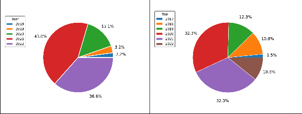
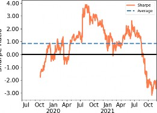

INTRODUCTION
According to Kissell (2021), quantitative trading is an automatic trading execution of a financial asset that utilizes mathematical functions and models to make trading decisions. Quantitative hedge funds use these algorithms to maximize profits due to their ability to learn from historical data.
Seeking to help traders better understand stock market conditions, earlier technical analysis-based algorithms were built by replicating human trading behavior using traditional technical indicators. However, these systems have failed due to their instability, poor generalization ability, and susceptibility to environmental change.
Reinforcement Learning (RL) is an emerging sub-field of machine learning. It enables an agent to learn in an interactive environment through trial and error, using feedback from its actions and experiences. The agent aims to improve its policy to acquire better rewards. Deep reinforcement learning (DRL) is a combination of reinforcement learning, and deep learning techniques that achieved significant progress in several areas, such as gaming Mnih et al. (2015), and manipulation Levine et al. (2016), enabling computers to perform complex decision-making tasks. DRL also has achieved significant performance in trading tasks seeking to maximize profits by capturing possible trading opportunities.
Even though there exist publications about DRL-based trading systems in the literature, many trading systems, such as Li et al. (2019) and Théate and Ernst (2021), provide feedback to the agent constantly due to the complicated reward tuning that is required to guide the algorithm to a lucrative policy by only giving information occasionally.
Although it may be easier to conduct the agent to a policy quickly, this method misguides the agent to be able to converge to a generalized policy involving multiple market scenarios. Providing feedback to an agent at every iteration may lead it to not exploring the environment efficiently, restraining it from generalizing its decision-making process.
In addition, financial markets do not produce meaningful information constantly. Therefore the algorithm should be trained so that it receives a contribution only during the end of an event, in this case, at the end of a trade.
This master dissertation proposes to create a Deep Q-Network (DQN) algorithm variant based on Trading DQN (TDQN), presented by Théate and Ernst (2021), named Extended Trading DQN (ETDQN). This variant can generalize its learning to trade across numerous market-behavior moments, receiving a simple, sparse exponential profit-and-loss reward once the trade ends.
ETDQN incorporates Trading DQN algorithm extensions, such as Double DQN, to tackle the overestimation problem and extends it by including some DQN improvements combined in Hessel et al. (2018).
The DQN-variant adopts distributional learning instead of the standard expectation. Proposed by Bellemare et al. (2017), this approach is beneficial since other statistics from the approximated distribution can be learned and optimized. In addition, the algorithm took advantage of both prioritized Schaul et al. (2016) and hindsight Andrychowicz et al. (2017) experience replays to sample meaningful experiences, according to prioritization, with different sub-goals each, assisting the model in its primary goal of optimizing its decisions to collect the maximum amount of profits and also removes the need for complex reward tuning.
To improve learning even further, instead of the standard feed-forward architecture adopted in the standard DQN, ETDQN contains the dueling neural network architecture Wang
et al. (2016) in combination with noisy linear layers Fortunato et al. (2018). This combination assists the agent in performing better exploration and identifying which states are more valuable.
Lastly, instead of using the common sampling approach based on regular intervals, this work adopted a different approach proposed by de Prado (2018) that provides the agent intraday data according to market activity. This method provides information to the agent at the same pace that the market processes information. Contrary to standard time sampling, this approach does not oversample information during low market activity or undersample during high activity. Aiming to compare performance, ETDQN is compared against the classical benchmarks
Buy-and-Hold and Sell-and-Hold. To check if the model performs better than random, a strategy named random action which chooses its actions randomly based on a discrete uniform distribution, is compared with it. Finally, ETDQN is also compared to the DQN variant TDQN. TDQN was implemented according to the same instructions described in the original paper. The performance comparison considers cumulative returns, the 6-month rolling Sharpe ratio, maximum drawdown, and average annual return (AAR).
OBJECTIVES
This section aims to describe the general and specific objectives of this master’s dissertation.
General Objective
This master dissertation proposes an event-driven DRL-based trading system that processes information according to market activity. The algorithm can generate a policy that generalizes across multiple market scenarios, identify trading opportunities, and take advantage of them. Moreover, it should be profitable concerning mean daily cumulative and annual averaged returns, provide a competitive mean Sharpe ratio, and have less risk of ruin than the remaining benchmarks.
Specific Objectives
The specific objectives of this dissertation are:
Generate a market-valuation driven intraday trading environment with technical indica- tors, time signature, and candlestick bars features. The environment should generate information at the same pace the market reaches a pre-defined market value and provide feedback to the agent only once it finishes a trade.
Implement a deep Q-Network (DQN) variant algorithm that extends the Trading DQN benchmark, incorporating Categorical DQN, Noisy-Dueling neural networks, prioritized, and hindsight experience replay extensions that can identify and take advantage of trading opportunities by receiving non-frequent feedback from the environment.
Prove that the proposed algorithm performs better than the best-evaluated benchmark in iShares S&P500 ETF, Western Digital Corporation, and ATOM/USDT data frames, considering the metrics: Mean daily cumulative returns, 6-month rolling Sharpe ratio, maximum Drawdown, and Average Annual Return.
The intended contributions of this dissertation are:
Provide an automated intraday trading system that is deployable on fundamental trading markets and is profitable regarding cumulative and annual returns in the long term.
Analyze and explore a pre-processing sampling step based on market value that generates information according to market activity, and compare it against the usual time sampling approach.
Propose a DQN-variant that can identify and take advantage of trading opportunities by receiving non-frequent feedback from the environment and does not need complicated reward tuning.
Obtain evidence that the proposed algorithm leads to a better overall performance in cumulative returns and drawdown against the Buy-and-Hold, Sell-and-Hold, random action, and TDQN benchmark strategies.
METHODOLOGY
According to Lakatos and Marconi (2003), a research methodology procedure is a set of systematic and rational guidelines that aims to firm a foundation for advancing knowledge and facilitating theory development. Research work can be classified as a primary or applied research type. Primary research seeks to expand the existing scientific knowledge base, whether applied research is designed to solve specific practical problems.
This master dissertation adopts the applied research method to solve a problem using a quantitative approach. Figure 1.1 shows the research methodology sequence for the respective work, which defines the milestones aiming to achieve its objective. The following hypothesis was raised: It may be possible to guide a deep reinforcement learning-based trader agent to find trading opportunities more effectively in terms of learning by simulating a sparse-reward trading environment.
A systematic literature review of deep reinforcement learning approaches applied to trading tasks was conducted. Related works about this topic were collected, analyzed, and discussed to find the current gaps and advances in the literature.
The data collection, cleaning, and pre-processing procedures were performed, followed by an exploratory analysis. The data frames came from two distinct sources: Kibot and Binance spot’s application programming interface. The adopted Interquartile range method removed outliers with a 7-day sliding window approach and was followed by the creation of bars sampled according to market value. Subsequently, the data was used to generate technical indicators and time signature features, embedding this information into the state.
The next step includes the DQN-variant algorithm and the dynamics of the trading environment implementation. It consists of the sparse reward dynamics implementation and the environment behavior regarding the chosen action. The developed algorithm was trained, having each trade position at each time step saved into a log file.
Finally, its performance was evaluated along with four distinct benchmarks: Buy- and-Hold, Sell-and-Hold, random action strategy, and TDQN benchmarks, according to daily cumulative returns, monthly and annual returns, drawdown, and rolling Sharpe ratio metrics.
Buy-and-hold is a benchmark that the investor buys the asset and holds it for an extended period. The strategy follows the asset’s price evolution throughout time. On the contrary,
Figure 1.1: Research methodology sequence
Sell-and-Hold is a strategy in which the trader should open a short position (bet against) the asset for a long time. In the random action strategy, the trader would choose decisions randomly according to a uniform probability distribution, and TDQN is a DRL-based algorithm proposed
by Théate and Ernst (2021) which implements Double DQN and apply it to a trading environment with time bars and provides dense rewards to the agent. Finally, the conclusion summarizes the results achieved in this dissertation and suggests future research direction.
THEORETICAL FOUNDATION
This section reviews some reinforcement learning concepts and Q-learning-based algorithms, as well as trading styles and metrics such as returns, maximum drawdown, and Sharpe ratio, which are necessary to build and evaluate the proposed deep reinforcement learning-based automated trading strategy.
TRADING STRATEGIES
Table 2.1: Trading style average time duration
Trading Style Trading Time Period

Scalpping From seconds to minutes
Day Trading From minutes to hours (one day maximum) Swing Trade From days to weeks
Position Trading From months to years
In trading, mainly in future markets, two possible positions are long or short. The first approach aims to open a position of a perpetual future contract at a specific price and profit from it as the price increases. On the other hand, the second approach is to open a position of a perpetual future contract, betting against the asset and making profits from it as the price decreases. Considering the existence of different trading styles, different agents may learn different trading styles.
EVALUATION METRICS
This section describes the evaluation metrics on which the strategy is evaluated. Some essential metrics for trading stocks include the Sharpe ratio, cumulative returns, and Maximum drawdown. The following subsections describe the metrics mentioned above.
Sharpe Ratio
The Sharpe ratio measures the risk-adjusted return of a financial portfolio. In 1966, Sharpe proposed this risk/reward ratio to capture in a single number. Equation 2.1 defines the Sharpe ratio:
= E[𝑅𝑎 − 𝑅𝑏 ] . (2.1)
𝜎𝑎
The quality of an investment is defined as the expected value E of the asset return 𝑅𝑎 subtracted by the risk-free return 𝑅𝑏, divided by the standard deviation of the asset 𝜎𝑎. This metric is defined by the mean of returns generated in the portfolio divided by the standard deviation of the same feature. The lower the standard deviation, the less risk and the higher the Sharpe ratio; the opposite is true.
Simple Returns
Simple returns on an investment are the amount that the investment has gained or lost over time, independent of the amount of time involved. Equation 2.2 defines simple returns calculation:
𝑅𝑒𝑡𝑢𝑟𝑛𝑠 = 𝑃𝑡 − 𝑃𝑡 . (2.2)
𝑃𝑡0
It is expressed as a percentage and is calculated by subtracting the asset price 𝑃 in time
𝑡0 (𝑃𝑡0 ) from the current price 𝑃 at time 𝑡 (𝑃𝑡), divided by the asset price in time 𝑡0 (𝑃𝑡0 ).
Logarithmic Returns
Logarithmic returns measure the rate of exponential growth. Unlike simple arithmetic returns, which measure the percent of price change for each sub-period, logarithmic returns measure the exponent of its natural growth during the same sub-period mentioned above. They are given by:
𝑡
𝑡
𝑃𝑡−1
𝑟 = ln(1 + 𝑅 ) = ln ( 𝑃𝑡 ) , (2.3)
−−
(·)
where ln is the natural logarithmic function, 𝑅𝑡 is the simple period return, 𝑃𝑡 is the asset price at time 𝑡 and 𝑃𝑡 1 is the asset price at 𝑡 1. As denoted above in the equation, simple logarithmic returns can be calculated by adding 1 to the simple return and subsequently taking its natural logarithm of it. Another option is to divide the asset price by its predecessor and apply the natural logarithm. This type of return tends to be more normally distributed than simple arithmetic ones.
Simple Cumulative Returns
Cumulative Returns, also known as multi-period returns, show the evolution of the investment taking its historical path (many periods) into consideration, unlike simple arithmetic returns, which consider a single one. The 𝑘-period cumulative return is defined as the cumulative product of the 𝑘-sub period returns calculated by:
1 + 𝑅𝑡 (𝑘) = (1 + 𝑅𝑡)(1 + 𝑅𝑡−1) · · · (1 + 𝑅𝑡−𝑘+1), (2.4) where 𝑘 is the number of period returns, in order to illustrate a 30-day cumulative returns calculation, the following procedure would have to be made:
1 + 𝑅𝑡 (30) = (1 + 𝑅𝑡)(1 + 𝑅𝑡−1) · · · (1 + 𝑅𝑡−29), (2.5)
−
𝑘 = 30 and the 30-day cumulative return would be calculated by the cumulative product from the first daily return 𝑅𝑡 to the last 𝑅𝑡 29 simple return. Mathematically, multi-period returns can be expressed as:
1 + 𝑅𝑡 (𝑘) =
𝑘−1
fl −
𝑗 =0
(1 + 𝑅𝑡− 𝑗 ). (2.6)
The symbol is the productory from the period return 𝑗 = 0 to the number of 𝑘 1 with each period return summed by 1.
Cumulative Logarithmic Returns
L
Cumulative logarithmic returns are more simple to calculate than simple cumulative ones and are given by:
𝑟𝑡 (𝑘) =
𝑘−1
∑︁
𝑗 =0
𝑟𝑡− 𝑗 . (2.7)
−
( )
The cumulative logarithmic return 𝑟𝑡 𝑘 from period 𝑘 is the from the return from the initial period 𝑗 = 0 to 𝑘 1.
Unlike simple cumulative returns that require calculating the geometric sum or the cumulative product of the two continuously compounded returns, in order to calculate cumulative logarithmic returns, it is only necessary to sum the two continuously compounded returns.
Maximum Drawdown
Maximum Drawdown (MDD) is the biggest peak-to-valley decline of an investment during a specific holding period. Drawdowns can help to determine an investment’s financial loss risk by looking into the past. Equation 2.8 defines the Maximum Drawdown:
𝑀𝐷𝐷 = 𝑃𝑒𝑎𝑘 𝐻𝑖𝑔ℎ − 𝑇𝑟𝑜𝑢𝑔ℎ 𝐿𝑜𝑤 . (2.8)
𝑃𝑒𝑎𝑘 𝐻𝑖𝑔ℎ
It is calculated by 𝑃𝑒𝑎𝑘 𝐻𝑖𝑔ℎ subtracted by 𝑇𝑟𝑜𝑢𝑔ℎ 𝐿𝑜𝑤, divided by 𝑃𝑒𝑎𝑘 𝐻𝑖𝑔ℎ.
Q-LEARNING
( )
Q-learning is a value-based, model-free, and off-policy reinforcement learning algorithm introduced by Watkins and Dayan (1992) that seeks to approximate the best action 𝑎 to be taken given a current state 𝑠. The algorithm estimates a state-action value function 𝑄𝜋 𝑠, 𝑎 , which represents how good it is for an agent to perform a particular action in a state under a given policy
𝜋. Equation 2.9 shows the respective state-action value function:
)
𝑄𝜋(𝑠, 𝑎) = E[𝑟𝑡 + 𝛾𝑟𝑡+1 + 𝛾2𝑟𝑡+2 + ...|𝑠𝑡 = 𝑠, 𝑎𝑡 = 𝑎, 𝜋]. (2.9) Denominated also as Q-function, 𝑄𝜋(𝑠, 𝑎 is calculated by taking the sum of rewards
( | )
𝑟 discounted by 𝛾 at each time step 𝑡, achievable under a given behavior policy 𝜋 = 𝑃 𝑎 𝑠 , after making an observation 𝑠𝑡 and taking action 𝑎𝑡 at a 𝑡 time step. The standard Q-learning algorithm often deals with problems in which the state and action spaces are small enough to approximate value functions to be represented as tables, also known as Q-tables. These contain the representation of every observation originated by the environment and every possible action
to be taken. With these features combined, the table represents all possible combinations of each state-action pair’s ability to reach the agent’s ultimate objective. Figure 2.1 shows an example of a Q-table applied to the trading problem having price and the relative strength index (RSI) as features.
Figure 2.1: Q-table representing states from a trading environment
Suppose that the agent is at the state where RSI and Price features are respectively equal to 30 and 2.5. If the model chooses the hold action, the Q-table shown in Figure 2.1 states that its action value is 3. In other words, this particular state-action pair is more beneficial to reach the agent’s goal than the buy action, which is -3. However, this Q-table shows that in this particular state 𝑅𝑆𝐼 = 30 and 𝑃𝑟𝑖𝑐𝑒 = 2.0, the best action to be taken according to the model objective is to sell, which its action value is 8. In addition, the last row of the Q-table shows that more states can be included, extending the trading environment and state-action pairs. Lastly, suppose the agent chooses its actions according to the Epsilon-Greedy policy, which selects the action with the highest estimated state-action pair during its interaction with the environment. In that case, it learns to avoid taking specific actions into the state in the future due to its low Q-value.
−
( )+
In reinforcement learning, the agent actively iterates with the environment through actions until a desired state is reached or a maximum number of steps are expired. This series of steps is defined as an episode. In the beginning, Q-learning starts all possible state-action pairs evaluated at 0 and begins learning from the environment. In order to learn through iteration, action values must be estimated. Some methods, such as Monte-Carlo learning, only estimate how good an action is when the episode finishes and only then is the Q-table updated. Instead of waiting for an entire episode to learn, temporal difference methods can estimate 𝑄 𝑣𝑎𝑙𝑢𝑒𝑠 at every iteration. These methods update the Q-table at the exact moment the episode is unfolding. At the core of Q-learning lies the Bellman equation shown in equation 2.10, serving as the target to estimate the action value given the information in the tuple 𝑆𝑡𝑎𝑡𝑒t, 𝐴𝑐𝑡𝑖𝑜𝑛t, 𝑅𝑒𝑤𝑎𝑟 𝑑t, 𝑆𝑡𝑎𝑡𝑒t 1 . The main idea in Q-learning is that the state-action pairs can be iteratively approximated using equation 2.10.
𝑎′
𝑄t+1 (𝑠, 𝑎) = E[rt + 𝛾𝑚𝑎𝑥𝑄𝑡 (𝑠′, 𝑎′)]. (2.10)
+
The mentioned equation states that the new Q-value yielded from being at state 𝑠 and performing action 𝑎 at time step 𝑡 1 is equals to the immediate reward rt plus the best Q-value possible from the following state 𝑠′, multiplied by the discount factor 𝛾 which controls the
contribution of past rewards, and E is the expectation symbol. This component is also called the target. Equation 2.2 shows the component as mentioned above, a formula adapted to be recursive and shaped to update Q-table action values.
′𝑎
𝑄t+1 (𝑠, 𝑎) = 𝑄t (𝑠, 𝑎) + 𝛼[rt + 𝛾𝑚𝑎𝑥𝑄t (𝑠′, 𝑎′) − 𝑄t (𝑠, 𝑎)]. (2.11)
∈ [ ]
( )
Figure 2.2 shows an example of Q-value update by using equation 2.11. Where it is composed of two main components: temporal difference target defined on equation 2.10, which is used to update the Q-table given a new experience tuple, as well as 𝑄 𝑠, 𝑎 element that is the current estimation of the action value. The hyper-parameter 𝛼 0, 1 is the learning rate. It controls how much a new estimated action value impacts the current estimate. If 𝛼 = 0, the model will not learn, and the estimated action pair is not changed. On the other hand, if 𝛼 = 1, the old action value is completely discarded.
Figure 2.2: Q-table update mechanism in a trading environment
By simulating an update of the Q-table presented in Figure 2.1, the learning process has already been started; hence the Q-table is not 0. Suppose the agent receives the initial observation of 𝑅𝑆𝐼 = 36 and 𝑃𝑟𝑖𝑐𝑒 = 2.0 from the environment. Then, the same acts accordingly to its greedy policy and chooses to buy since it is the action with the highest value. In the following, the environment reacts to the agent’s choice. It returns the immediate reward calculated by the objective function defined during the implementation, which yields 𝑟𝑡 = 4 and the next state
( )
( )
𝑅𝑆𝐼 = 15 and 𝑃𝑟𝑖𝑐𝑒 = 1.0. As soon as the learner receives the previous information, it can update the Q-value using equation 2.2. Having the current estimated action value of 𝑄𝑡 𝑠, 𝑎 = 5, at the moment the next state 𝑆′ is presented, the agent will not take the following action based on the previous policy but will choose the best action value from all the possible ones. In this case, the best action value in the next state 𝑆′ is 9 (hold), in mathematical representation,
𝑚𝑎𝑥𝑄t 𝑠′, 𝑎′ = 9. Finally, assuming that the discount and learning rates are 0.99 and 0.1, the
𝑎′
new Q-value estimation is given by: 𝑄 (𝑠, 𝑎) = 5 + 0.1[4 + 0.99 ∗ 9 − 5] = 5.791. As iterations
→
go by, such action values tend to converge to the optimal action-value function 𝑄𝑡 𝑄𝑡* as
→ ∞
𝑡 . The optimal state-action value function measures the maximum state-action function overall policies and is given by
( ) ( )
( )
𝑄*(𝑠, 𝑎) = E[𝑚𝑎𝑥𝑄𝜋 (𝑠, 𝑎)], (2.12) where 𝑄* 𝑠, 𝑎 is the optimal action-value function, E the expectation symbol, max the maximum operator, and 𝑄𝜋 𝑠, 𝑎 the action-value function following the 𝜋 policy. 𝑄* 𝑠, 𝑎 equals the action-value function that returns the highest expected action-value pairs under 𝜋 policy.
DEEP Q-NETWORKS
Deep Q-Network (DQN) is an algorithm that aims to approximate a state-action value function in a Q-Learning framework using a deep neural network. Introduced by Mnih et al. (2013), it was the first deep learning model to successfully learn to control policies directly from high-dimensional sensory input using reinforcement learning. Figure 2.3 shows a standard Q-table and a Deep Q-network.
Figure 2.3: Q-table and Deep Q-Network architectures
In order to overcome the limitation of small state and action spaces in Q-tables, DQN incorporated a nonlinear neural network function approximator with weights 𝜃 called Q-networks. The main features introduced to the algorithm in order to stabilize learning were Fixed Q-targets and Experience Replay. Q-learning updates its estimated action values based on another estimated value, hence this mechanism may potentially lead to harmful correlations. DQN solves this issue by using a target neural network, which contains fixed Q-targets. This network has the same
architecture as the main Q-network, except it keeps its 𝜃i− weight parameters fixed, and after 𝜏 steps, they are updated by copying the main Q-network weights 𝜃𝑖. Equation 2.13 represents the main Q-network forward pass.
′𝑎
( ) ∼ ( ) ( )
𝐿𝑖 (𝜃𝑖) = E(𝑠,𝑎,𝑟,𝑠′)∼𝑈 (𝐷) [(r + 𝛾𝑚𝑎𝑥𝑄 (𝑠′, 𝑎′; 𝜃i−) − 𝑄 (𝑠, 𝑎; 𝜃𝑖))]2, (2.13) where the subscript of the expected value operator 𝑠, 𝑎, 𝑟, 𝑠′ 𝑈 𝐷 means that the 𝑠, 𝑎, 𝑟, 𝑠′
′𝑎
experience tuples are uniformly drawn from the experience replay buffer, E is the expectation symbol, r + 𝛾𝑚𝑎𝑥𝑄 (𝑠′, 𝑎′; 𝜃i−) is the temporal difference updated action value target originated
( )
from the target neural network, and 𝑄 𝑠, 𝑎; 𝜃𝑖 is the action value originated from the main Q-network, parameterized by weights 𝜃𝑖. Figure 2.4 shows the learning mechanism of the DQN algorithm.

Figure 2.4: Deep Q-Network sampling and update mechanism in a trading environment
The learning phase starts by uniformly sampling a mini-batch of experiences tuples from the experience replay buffer and feeding them to both networks. Then, the Q-network weights 𝜃𝑖 are copied to the target network, and its 𝜃i− weights are kept fixed for 𝜏 steps, having also its output
set to as target 𝑌 𝐷𝑄𝑁 = r + 𝛾𝑚𝑎𝑥𝑄 (𝑠′, 𝑎′; 𝜃−) to the main Q-network. In sequence, the predicted
𝑖
action value 𝑄 (𝑠, 𝑎;
𝑎′ i
𝜃𝑖) produced by the main network is obtained, and its loss is calculated by
taking the squared difference between the components above. Finally, differentiating the loss function with respect to the Q-network weights 𝜃𝑖, reaches Equation 2.14, which results in the backward pass at each iteration 𝑖 of the main Q-network.
𝐷𝑄𝑁
∇𝜃𝑖 𝐿𝑖 (𝜃𝑖) = E𝑠,𝑎,𝑟,𝑠′ [𝛼(𝑌𝑖 − 𝑄 (𝑠, 𝑎; 𝜃𝑖))∇𝜃𝑖 𝑄 (𝑠, 𝑎; 𝜃𝑖)], (2.14)
𝑖
( )
where the rate of weights 𝜃𝑖 change is the difference of the temporal difference updated action value target 𝑌 𝐷𝑄𝑁 and the action value 𝑄 𝑠, 𝑎; 𝜃𝑖 produced by the prediction neural network multiplied by the gradient of the previous component in respect to weights 𝜃𝑖.
In addition to incorporating Fixed-Q targets, an experience replay mechanism was also introduced to the algorithm. Initially published by Lin (1992), it is a fixed-size memory buffer that stores the most recent experiences gathered by the agent. It enables online reinforcement learning agents to reuse them multiple times instead of immediately disposing of them. This technique stabilizes learning by breaking the temporal correlations by randomly sampling experiences and not presenting them sequentially. It also brings benefits to learning due to the reuse of rare experiences multiple times. Experience replay is typically implemented so that once a new experience is collected, the buffer discards the oldest and stores the new one in its place. Regarding its sampling strategy, the fixed-size buffer has many variants that explore distinct distributions. Some other variants include Schaul et al. (2016), which proposes the Prioritized Experience Replay to sample transitions accordingly to a non-uniform distribution, benefiting experiences with more significant temporal difference error, and Andrychowicz et al. (2017), which presents the Hindsight Experience Replay as an alternative for complicated reward engineering in challenging environments with sparse or binary rewards. The main idea of this variant is to repeat each episode aiming for a different goal other than the previous one that the agent was attempting to achieve.
DOUBLE DEEP Q-NETWORKS
In both standard Q-learning and DQN algorithms, the max operator, in their respective temporal difference targets, utilize the same weights to select and evaluate an action. Thus, this approach makes the agent more likely to select overestimated values under certain conditions, such as when training starts and Q-values are still evolving, resulting in overoptimistic value estimates. Aiming to reduce the overestimation problem, Hasselt et al. (2016) proposed to implement the original Double Q-learning to deep reinforcement learning proposing a solution that decomposes the max operator in the target function into action selection and action evaluation. Two value functions are learned by assigning each experience randomly to update one of the two value functions, such that there are two weights, 𝜃 and 𝜃′ . Seeking to make the minimal possible modifications to DQN towards Double Q-learning, the author proposed to use the main Q-network in DQN architecture to evaluate the greedy policy and the target network to estimate the values. Even though both networks are not entirely decoupled, they can be used without introducing additional networks. Equation 2.15 shows the temporal difference target update for Double DQN.
𝑌 𝐷𝑜𝑢𝑏𝑙𝑒𝐷𝑄𝑁 = r + 𝛾𝑚𝑎𝑥𝑄 ((𝑠′, 𝑎′; 𝜃𝑖); 𝜃i−). (2.15)
i 𝑎′
The selection of the action, in the max operator, is due to the online weights 𝜃𝑖 and made by the main Q-network. However, the second set of weights 𝜃i− are used to evaluate this policy. The target network is still updated every 𝜏 steps by copying the Q-network weights
i
𝜃𝑖. Equations 2.13, 2.14 still apply to Double DQN, but having its targets 𝑌 𝐷𝑄𝑁 replaced by
i
𝑌 𝐷𝑜𝑢𝑏𝑙𝑒𝐷𝑄𝑁 . Figure 2.5 shows the learning mechanism of the Double DQN algorithm.
Figure 2.5: Double deep Q-Network sampling and update mechanism in a trading environment
The learning phase starts by uniformly sampling experience tuples stored in the experience replay buffer. The total amount of sampled tuples is equivalent to the chosen batch size. Then, the next state array serves as input to the main Q-network and the 𝑎𝑟𝑔𝑚𝑎𝑥 operator is applied to retrieve the best action predicted from the network. In the following, the next state is also fed to the target network, however the Q-value retrieved is regarding the position of the previous action generated by the main Q-network, in other words, the action is generated by the main Q-network and evaluated by the target network. In case that the trade is over, the temporal difference target is given by the reward, else it is given by
′𝑎
𝑌 𝐷𝑜𝑢𝑏𝑙𝑒𝐷𝑄𝑁 = r + 𝛾𝑚𝑎𝑥𝑄 ((𝑠′, 𝑎′; 𝜃𝑖); 𝜃i−), (2.16)
(( )
where 𝑟 is the reward, 𝛾 is the discount rate, 𝑚𝑎𝑥𝑄 𝑠′, 𝑎′; 𝜃𝑖 ; 𝜃i− is the Q-value in which the action is generated by the main Q-network having the target network as evaluator. Lastly, the current state is fed to the main Q-network to output the Q-value function, in respect to the current
state and the loss is given by
𝐿𝑖 (𝜃𝑖 ) = E(𝑠,𝑎,𝑟,𝑠′)∼𝑈 (𝐷) [𝑌
𝐷𝑜𝑢𝑏𝑙𝑒𝐷𝑄𝑁
− 𝑄 (𝑠, 𝑎; 𝜃𝑖)]
2, (2.17)
where 𝜃𝑖 is the weights of the main Q-network, 𝑌 𝐷𝑜𝑢𝑏𝑙𝑒𝐷𝑄𝑁 is the target, and the action value
𝑄 (𝑠, 𝑎; 𝜃𝑖) is produced by the main neural network.
( )
Bellemare et al. (2017) proposed to explore the distribution of the random values received by an RL agent instead of the typical approach that models the expectation of these values using the Bellman expectation equation for state-action value function 𝑄 𝑠, 𝑎 which is written as
𝑄 (𝑠, 𝑎) = E𝜋 [𝑅(𝑠, 𝑎) + 𝛾𝑄 (𝑠′, 𝑎′)], (2.18)
( )
( )
where 𝑅 𝑠, 𝑎 is the immediate reward provided in state 𝑠 under the action 𝑎, 𝛾 is the discount factor, 𝑄 𝑠′, 𝑎′ is the state-action value in the next state 𝑠′ taking action 𝑎′, E is the expectation symbol. The authors remove the expectations inside Bellman’s equation and consider instead the full distribution of the random variable 𝑍𝜋.
𝑍 (𝑠, 𝑎) =𝐷 𝑅(𝑠, 𝑎) + 𝛾𝑍 (𝑠′, 𝑎′), (2.19)
where R(s,a) is the immediate reward provided in state 𝑠 under the action 𝑎, 𝛾 is the discount factor, 𝑍 (𝑠′, 𝑎′) is the distribution of the the random variable 𝑍 in next state 𝑠′ and taking action
( )
𝑎′. =𝐷 states that 𝑍 𝑠, 𝑎 is equivalent to a distribution. This distribution is adopted as a mapping from state-action pairs to distributions over returns. It is called the value distribution.
∈
Based on a distributional approach, Bellemare et al. (2017) proposed an algorithm to approximate distribution probability masses placed on a discrete support vector 𝑧 parameterized by 𝑁𝑎𝑡𝑜𝑚𝑠 N+. The discrete distribution’s atoms may be seen as the "canonical returns" of it. They are consecutive, non-overlapping intervals with evenly spaced values in 𝑧. The discrete support 𝑧𝑖 is given by
𝑧𝑖 = 𝑉𝑚𝑖𝑛 + 𝑖Δ𝑧, (2.20)
∈
where 𝑉𝑚𝑖𝑛 R is the minimum (starting) value of the support vector 𝑧𝑖 whose values are evenly spaced, 𝑖 is the position of vector 𝑧𝑖. Δ𝑧 is the minimum value that is added to each position of vector 𝑧 defined by
Δ𝑧 = 𝑉𝑚𝑎𝑥 − 𝑉𝑚𝑖𝑛 , (2.21)
𝑁𝑎𝑡𝑜𝑚𝑠 − 1
where 𝑁𝑎𝑡𝑜𝑚𝑠 is the number of atoms, 𝑉𝑚𝑎𝑥 ∈ R is the maximum value of the discrete support and
𝑉𝑚𝑖𝑛 is described by equation above. In addition, the atom probabilities 𝑝𝑖 (𝑠, 𝑎) of a distribution
𝑍𝜋 (𝑠, 𝑎) can be computed as
( ) L − 𝑒 𝑗 (2.22)
𝑒𝑧𝑖
𝑝𝑖 𝑠, 𝑎 = 𝑁 1 𝑧 ,
𝑗 =0
− ( )
where 𝑒 is the Euler’s number, 𝑧 is the support vector that holds the "canonical" values of the distribution. 𝑁 is the number of atoms, 𝑖 is the position of the atom that the probability is calculated in the vector 𝑧, and 𝑗 is an evenly-space variable that sums all-atom values from position 0 to 𝑁𝑎𝑡𝑜𝑚𝑠 1. 𝑝𝑖 𝑠, 𝑎 . It is known as the softmax function. This function takes the vector 𝑧 and normalizes it into a probability distribution consisting of probabilities proportional to the exponentials of the input numbers. Figure 2.6 shows an illustrative example of generating the support vector 𝑧 and calculating the probability of each atom.
Suppose the number of atoms 𝑁𝑎𝑡𝑜𝑚𝑠 is 10. The support vector 𝑧𝑖 will contain ten positions. In addition, the example adopted the vector’s boundaries with the minimum starting
Figure 2.6: Example of support vector 𝑧𝑖 and its probability distribution
number 𝑉𝑚𝑖𝑛 of -5 and the maximum final number 𝑉𝑚𝑎𝑥 of +5. To fill the remaining positions, first, a minimum variation of vector 𝑧 (Δ𝑧) is calculated by:
Δ𝑧 = 𝑉𝑚𝑎𝑥 − 𝑉𝑚𝑖𝑛 5 − (−5)
= 1.11,
𝑁 − 1 10 − 1
where Adopting Δ𝑧 = 1.11, the remaining positions are calculated by multiplying Δ𝑧 with its respective position and sum the minimum adopted value 𝑉𝑚𝑖𝑛, according to Equation 2.20. To illustrate this computation, the first and second positions of the support vector are written, respectively
𝑧1 = −5 + (1 × 1.11) = −3.89,
𝑧2 = −5 + (2 × 1.11) = −2.78.
( )
In order to calculate the probabilities 𝑝𝑖 𝑠, 𝑎 for each atom of the vector 𝑧𝑖, the Softmax function in Equation 2.22 was applied to it. In the upper part of the equation, each atom on positions 𝑖 was taken and served as the exponent of Euler’s number. The value of each atom on positions 𝑖 was added to the lower part. To illustrate how the function is applied, the probabilities of the value in positions four and five are given by:
( ) L
𝑝4 𝑠, 𝑎 = 9
𝑗 =0
0.56
−𝑒
= 0.00259 = 0.259%,
𝑒𝑧 𝑗 = 221.242
( ) L
𝑝5 𝑠, 𝑎 = 9
𝑗 =0
𝑒0.55

= 0.00787 = 0.788%.
𝑒𝑧 𝑗 = 221.242
( )𝑡+1𝑡 1
The main idea of Categorical DQN is that the return distributions satisfy equation 2.19. Suppose a given state 𝑠 and action 𝑎, the distribution of returns under the optimal policy 𝜋∗ should match the target distribution, defined by taking the distribution for the next state 𝑠′ and action 𝑎∗ = 𝜋∗ 𝑠 . Figure 2.9 shows the effects of reward, discount factor, and projection
step in th+e returns distribution.
Figure 2.7: Operations using Bellman operator on Distribution of returns
T
( )
𝑃𝜋 𝑍 𝑠′, 𝑎′ is the next state distribution under policy 𝜋, 𝛾 is the discount factor, 𝑅 is the immediate reward, Φ is a L2-projection of the target distribution onto the support vector 𝑧𝑖 and is the distributional Bellman optimality operator. By increasing the 𝛾 discount factor, the
distribution shrinks towards 0, and the probability masses are concentrated towards the center, increasing the probability in a certain range. In addition, adding rewards shifts the distribution in the x-axis. Lastly, the projected Bellman update step Φ distribution is shown in the last Figure. This projection may be used as a target to calculate the loss when updating the Bellman equation. To adapt the variant Bellman update to the DQN architecture for a given experience
tuple (𝑠, 𝑎, 𝑟, 𝑠′), first, the Q-value for the next state 𝑄 (𝑠′, 𝑎′) is calculated:
𝑄 (𝑠′, 𝑎′) =
𝑧𝑖 𝑝𝑖 (𝑠′, 𝑎′). (2.23)
𝑁∑︁−1
𝑖=0
−
𝑖=0
L
( )
−
Where the 𝑄 𝑣𝑎𝑙𝑢𝑒 in the next state 𝑠′ is the sum 𝑁−1 of the inner products of the distribution in respect to the greedy action with its probability distribution vector 𝑝𝑖 𝑠′, 𝑎′ from 0 to the number of atoms 𝑁 1. Figure 2.8 shows an illustration of feeding a state in the neural network to retrieve the best distribution regarding the greedy action 𝑎∗.

Figure 2.8: Neural Network architecture in Categorical DQN
Suppose the array 𝑍 (𝑠′, 𝑎∗) selected in Figure 2.8 was in respect to the greedy action distribution. 𝑍 (𝑠′, 𝑎∗) can be denoted 𝑧𝑖, and the Q-value of that distribution would be calculated as the inner product of the support vector 𝑧𝑖 and 𝑝𝑖 (𝑠′, 𝑎∗) written as:
𝑄 (𝑠′, 𝑎∗) =
9
∑︁
𝑖=0
𝑧𝑖 𝑝𝑖 (𝑠′, 𝑎∗
) = 0.68.
To calculate the loss of the neural network, a new projected vector support 𝑧 𝑗 is created
with evenly spaced values, according to equations 2.20 and 2.21. three additional 𝑏 𝑗 , 𝑙, and 𝑢 vector variables respectively written:
Tˆ 𝑧 𝑗 is computed as well as
𝑉𝑚𝑖𝑛
Tˆ 𝑧 𝑗 = 𝑟 + 𝛾𝑧 𝑗 𝑉𝑚𝑎𝑥 , (2.24)
𝑏 𝑗
= Tˆ 𝑧 𝑗 − 𝑉𝑚𝑖𝑛 , (2.25)
Δ𝑧
𝑙 = ⌊𝑏 𝑗 ⌋, (2.26)
𝑢 = ⌈𝑏 𝑗 ⌉. (2.27)
T
𝑗 T 𝑗
Variable 𝑏 contains real value index positions which each value of ˆ 𝑧 is closest in respect to the support 𝑧 𝑗 and is defined by the projected support ˆ 𝑧 𝑗 subtracted by the minimum value of
the distribution 𝑉𝑚𝑖𝑛 divided by Δ𝑧 which are defined above. The lower variable 𝑙 is the floor of the variable 𝑏 𝑗 . The floor of a number is the greatest integer less than or equal to 𝑏 𝑗 . On the other hand, the array variable 𝑢 is the ceiling of 𝑏 𝑗 . The ceiling of a variable is the least integer greater than or equal to 𝑏 𝑗 . Figure 2.9 illustrates the calculation of the abovementioned variables.
( )
Suppose that the distribution 𝑍 𝑠′, 𝑎∗ was taken from Figure 2.8. To calculate the neural network’s loss, a new support vector must be created. In addition, suppose that the first array 𝑧𝑖 is the created support vector. The result of the projection of Tˆ 𝑧𝑖 onto the support
Figure 2.9: Computation of the projection of Tˆ 𝑧 𝑗 onto the support 𝑧𝑖, and variables 𝑏 𝑗 , 𝑙, and 𝑢 derived from it
𝑧𝑖 is shown 2.24 in the second array. The immediate reward given from the environment
Tˆ 𝑧 𝑗 = 𝑟 + 𝛾𝑧 𝑗 𝑉𝑚𝑎𝑥 = 4 + [(0.99 × 𝑧 𝑗 )]+5 . The bounds of the projection must be in [𝑉𝑚𝑖𝑛, 𝑉𝑚𝑎𝑥].
𝑟𝑡 was adopted as 4 and the discount factor 𝛾 was set to 0.99, the calculation done was
T
𝑉𝑚𝑖𝑛
−5
Following the example, they should be within the [-5,+5] range. It can be observed that the last four positions of ˆ 𝑧 𝑗 contained samples greater than 𝑉𝑚𝑎𝑥; hence they were clipped and
replaced by the maximum value. In the following, the variable 𝑏 𝑗 is calculated using Equation
T
T 𝑖
2.25 based on the previous ˆ 𝑧 array with Δ𝑧 = 1.11. This variable computes the real-valued index positions in which each value of ˆ 𝑧𝑖 is closest in respect to the support 𝑧𝑖. Lastly, 𝑙 and 𝑢
variables are calculated. The distribution 𝑙 and 𝑢 compute the integer neighboring indexes from
( ) ( )
( ) ( )
𝑏𝑖. 𝑙 contains the greatest integers less than or equal to its respective position on 𝑏 𝑗 , and 𝑢 holds the least integers greater than or equal to its respective position on 𝑏 𝑗 . Lastly, 𝑚 is described as the projected distribution of 𝑍 𝑠′, 𝑎∗ . The vector 𝑝𝑖 𝑠′, 𝑎∗ holds the probability masses
in respect to 𝑍 𝑠′, 𝑎∗ . The previous variables 𝑢, 𝑙 and 𝑏 𝑗 shifts the probability 𝑝𝑖 𝑠′, 𝑎∗ and
distributes to its neighbors. The projected distribution 𝑚 is used as the target for the network.
Equations 2.28 and 2.29 define the probability mass distribution.
𝑚𝑙 = 𝑚𝑙 + 𝑝𝑖 (𝑠′, 𝑎∗)(𝑢 − 𝑏𝑖), (2.28)
( ) T
𝑚𝑢 = 𝑚𝑢 + 𝑝𝑖 (𝑠′, 𝑎∗)(𝑏𝑖 − 𝑙), (2.29) where 𝑝 𝑗 𝑠′, 𝑎∗ is the probability vector of ˆ 𝑧 𝑗 , 𝑢, 𝑏𝑖 are the same as the variables mentioned above and variable 𝑚 is the variable that holds probability masses function of the distribution values.
Lastly, Cross-entropy is used as the loss function. It is a measure of the difference between two probability distributions. The rest follows the same architecture as the standard DQN algorithm. Cross-entropy is defined as
𝐿 (𝜃) = − ∑︁ 𝑚𝑖log 𝑝𝑖 (𝑠, 𝑎), (2.30)
𝑖
L
( ) ( )
where it is the sum defined as of the multiplication of 𝑚𝑖 the projected distribution vector of probability masses and 𝑝𝑖 𝑠, 𝑎 the probability vector of the distribution 𝑍 𝑠, 𝑎 which is generated by inputting the state 𝑠 taking action 𝑎, the base of the used logarithm (log) was the Euler’s number 𝑒.
DUELING NETWORK ARCHITECTURE
The dueling neural network architecture was proposed by Wang et al. (2016). The authors’ intuition behind this architecture is that some states are more valuable than others; it is unnecessary to estimate the value of each action choice for non-important conditions. They illustrate this insight using the Atari2600’s Enduro racing game as an example. During the race, it is only worth knowing whether to move left or right when a collision is imminent. In other states, the agent should know which action to take, but in many other states, the choice of action has no repercussions on what happens. The dueling network architecture was proposed to learn which states are (or are not) valuable without understanding the effect of each action for each state. The architecture consists of two linear stream layers (fully connected) such that each has the capability of providing separate estimates of the value and advantage functions. Lastly, both streams are combined to produce a single Q-value for each action. To construct the architecture
mentioned above. The state-value and advantage function concepts have to be explained. The state-value function 𝑉 (𝑠) is given by:
𝑉𝜋(𝑠) = E[𝑟𝑡 + 𝛾𝑟𝑡+1 + 𝛾2𝑟𝑡+2 + ...|𝑠𝑡 = 𝑠, 𝜋], (2.31) where E is the expectation symbol, 𝑟𝑡 is the reward provided to the agent at time step 𝑡, 𝑠𝑡 is
the state at time step t, 𝜋 is the policy that the agent follows and 𝛾 is the discount factor. This function is the expected return when it starts in state 𝑠 and follows 𝜋 after that. In other words, it measures how good it is to be in a particular state. This is useful because the agent can know if his current state is valuable or worthless regarding reaching his final goal. Usually, this function is confused with the state-action value function (Equation 2.9). However, as mentioned above, Equation 2.31 measures how good a state is compared to the others and follows the policy 𝜋. It only provides information about the value of the state. Equation 2.9 measures how good an action is in a certain state and follows the policy 𝜋 after that. It provides information about the quality of the action and measures the value of choosing a particular action when in this state; hence the name Q-value. The advantage function measures how much an action is a good or bad decision given a certain state and is given by:
( )
𝐴𝜋 (𝑠, 𝑎) = E[𝑄𝜋 (𝑠, 𝑎) − 𝑉𝜋 (𝑠)], (2.32) where E is the expectation symbol, 𝑄𝜋 𝑠, 𝑎 is the state-action value function under the policy
( )
𝜋 and 𝑉𝜋 𝑠 is the state-value function. The advantage function interpretation measures the advantage of selecting an action from a state. Figure 2.10 shows the standard adopted feed-forward architecture commonly used in deep reinforcement learning and the dueling neural network architecture.
( ) ( )
Figure 2.10(b) shows the dueling neural network architecture. The architecture shares a common module at the beginning composed of linear layers followed by rectified linear unit activation functions (RELUs). The network is separated into two streams to represent the state-value 𝑉 𝑠 and advantage 𝐴 𝑠, 𝑎 functions. At the end of the architecture, both streams are combined by an aggregating layer followed by a softmax activation function to produce the
probabilities over the estimated 𝑄 (𝑠, 𝑎) state-action value function. On the other hand, Figure
Typical feed-forward neural network architecture adopted in deep reinforcement learning
Dueling feed-forward neural network architecture
Figure 2.10: Neural network architectures
2.10(a) shows the typical single-stream architecture adopted during the classical DQN algorithm. It consists of linear layers, followed by the RELU activation functions. A softmax activation function in the last linear layer normalizes the network’s output to a probability distribution over the state-action value function.
According to Figure 2.10(b), consider one stream of linear layers output a scalar
( ) | | ( )
𝑉 𝑠; 𝜃; 𝛽 , and the remaining stream output a 𝐴 -scalar vector 𝐴 𝑠, 𝑎; 𝜃, 𝛼 . 𝜃 denotes the parameters of the linear layers shared by both streams at the beginning of the network. 𝛼 and 𝛽 are the parameters of the two streams of linear layers. To generate the state-action value function, the definition of the advantage given by Equation 2.32 can be applied, resulting in the following
𝑄 (𝑠, 𝑎; 𝜃, 𝛼, 𝛽) = 𝑉 (𝑠; 𝜃; 𝛽) + 𝐴(𝑠, 𝑎; 𝜃, 𝛼). (2.33)
( ) ( )
( )
However, since 𝑄 𝑠, 𝑎; 𝜃, 𝛼, 𝛽 is just a parameterized estimate of the actual state-action value function, Equation 2.35 cannot fully recover 𝑉 𝑠; 𝜃; 𝛽 and 𝐴 𝑠, 𝑎; 𝜃, 𝛼 by providing the
( )
𝑄 𝑠, 𝑎; 𝜃, 𝛼, 𝛽 function. To solve the previous issue, the authors force the advantage function
estimator to have zero advantage at the chosen action according to
( ) ( )
𝑎′ ∈| 𝐴|
𝑄 (𝑠, 𝑎; 𝜃, 𝛼, 𝛽) = 𝑉 (𝑠; 𝜃; 𝛽) + ( 𝐴(𝑠, 𝑎; 𝜃, 𝛼) − max 𝐴(𝑠, 𝑎′; 𝜃, 𝛼)), (2.34) forcing the advantage function estimator to be 0 in the best-evaluated action 𝑎′, we have the
Q-value function equals to the state-value function (𝑄 𝑠, 𝑎; 𝜃, 𝛼, 𝛽 = 𝑉 𝑠; 𝜃; 𝛽 ). This way, one
stream can measure the estimation of the value function while the other produces an estimate of the advantage function. Finally, the authors replace the 𝑚𝑎𝑥 operator with an average by adding an alternative module. The following final equation was adopted to calculate the Q-function separating the advantage and state value functions
| 𝐴|
𝑄 (𝑠, 𝑎; 𝜃, 𝛼, 𝛽) = 𝑉 (𝑠; 𝜃; 𝛽) + ( 𝐴(𝑠, 𝑎; 𝜃, 𝛼) − 1 ∑︁ 𝐴(𝑠, 𝑎′; 𝜃, 𝛼)), (2.35)
𝑎′
( )
( )
where 𝑠 is a state 𝑠, 𝑎 is an action 𝑎, 𝑉 𝑠; 𝜃; 𝛽 is the state-value function in state 𝑠 with respect to the parameters 𝜃 from the first shared linear layer of the network and 𝛽 are the parameters from the value-stream only. 𝐴 𝑠, 𝑎; 𝜃, 𝛼 is the advantage function of the action 𝑎 in state 𝑠 with respect to the parameters 𝜃 and 𝛼, which are the parameters from the Advantage stream branch
𝐴
of the network. | 1 | L𝑎′ 𝐴(𝑠, 𝑎′; 𝜃, 𝛼) is the average of the advantage values proLduced in state
𝑠 taking the best evaluated action 𝑎′ with respect to the parameters 𝜃 and 𝛼. represents a
| |
sum of multiple terms; in this case, all advantage values are produced in state 𝑠 concerning the best-evaluated action 𝑎′. Lastly, 𝐴 is the absolute value of the number of evaluated advantage values.
NOISY LINEAR LAYER
In a typical reinforcement learning approach, the agent explores or exploits through a 𝜖 -greedy heuristic. The hyperparameter 𝜖 decreases throughout the training. If 𝜖 < random number, the agent chooses its action randomly, and if 𝜖 > random number, the agent acts "greedily" by choosing its activity according to its policy. Fortunato et al. (2018) proposed to replace the conventional exploration 𝜖 -greedy heuristic for a noisy linear layer that adds parametric noise to its weights where learned perturbations of the network weights are used to drive exploration. The authors show that the induced stochasticity of the agent’s policy can be used for enhanced investigation. The feature’s main idea is that a single change to the weights vector may influence a consistent state-dependent shift in policy over multiple time steps. A noise distribution samples the perturbations, and variance is a parameter that can be considered as the energy of the injected noise. These variance parameters are learned using gradients from the reinforcement learning loss function alongside the other parameters of the agent. Suppose a linear layer from a neural network with 𝑝 inputs and 𝑞 outputs given by
𝑦 = 𝑤𝑥 + 𝑏, (2.36)
where 𝑥 ∈ R𝑝 is the layer’s input, 𝑤 ∈ R𝑞×𝑝 is the neural network’s weight matrix, and neural network’s 𝑏 ∈ R𝑏 is the bias. Its corresponding noisy linear layer is defined by
∈ ∈ ∈
∈ ∈ ∈
𝑦 = ( 𝜇𝑤 + 𝜎𝑤 ⊙ 𝜀𝑤)𝑥 + 𝜇𝑏 + 𝜎𝑏 ⊙ 𝜀𝑏, (2.37) where 𝜇𝑤 R𝑞×𝑝 and 𝜎𝑤 R𝑞×𝑝 are the learnable parameters from the weight matrix, 𝜇𝑏 R𝑞
and 𝜎𝑏 R𝑞 are learnable parameters for the neural network’s bias. 𝜀𝑤 R𝑞×𝑝 and 𝜀𝑏 R𝑞 are
noise random variables from the weight matrix and bias respectively. The authors propose two
𝑖, 𝑗
distribution approaches to generate the noisy random variables for the parameters 𝜀𝑤 and 𝜀𝑏: Independent Gaussian noise and Factorized Gaussian noise. The first option uses an independent Gaussian noise entry per weight, and the second uses an independent noise per output and another independent noise per input. This master dissertation uses the factorized Gaussian noise approach to reduce the compute time of random number generation. 𝑝 unit Gaussian variables 𝜀𝑖 for noise of the inputs and q unit Gaussian variables 𝜀 𝑗 for noise of the outputs can be used to factorize
𝜀
𝑤
𝑖, 𝑗
(𝑝 + 𝑞 unit Gaussian variables in total). Each 𝜀𝑤
and 𝜀 𝑗 units can be defined as
𝜀
𝑤
𝑖, 𝑗
= 𝑓 (𝜀𝑖) 𝑓 (𝜀 𝑗 ), (2.38)
𝑗
√︁( ) ( ) ( ) | |
𝜀𝑏 = 𝑓 (𝜀 𝑗 ), (2.39)

where 𝑓 𝑥 is a real-valued function and adopted as 𝑓 𝑥 = 𝑠𝑔𝑛 𝑥 𝑥 , 𝜀 corresponds to the Gaussian variables for to create noise for the inputs and 𝜀 𝑗 the Gaussian variables to apply noise to the outputs. Figure 2.11 shows the schematic of the noisy linear layer.
Figure 2.11: Linear noisy layer schematic
∈
⊙
where 𝑥 R𝑝 is the layer’s input, 𝜀 is a vector of zero-mean noise with fixed statistics. 𝜀𝑤 are the Gaussian random variables to generate noise for the weights matrix, 𝜀𝑏 are the Gaussian random variables to generate noise for the network bias. is the element-wise multiplication, 𝜇𝑤 and
𝜎𝑤is the mean and standard deviation of the distribution regarding the weights matrix and 𝜇𝑏 and 𝜎𝑏is the mean and standard deviation of the distribution regarding the bias. 𝑤 is the matrix weights and 𝑏 the bias of the neural network and 𝑦 the output.
PRIORITIZED EXPERIENCE REPLAY
Prioritized experience replay was proposed to enhance the use of replay memory for learning. Schaul et al. (2016) proposed to modify the sampling mechanism of the standard DQN algorithm, which samples transitions uniformly at random. The main idea of the technique is to prioritize transitions that maximally reduce the global loss in its current state that improves on uniform random replay. The authors argue that one idealized criterion to prioritize experiences could be the amount the agent can learn from experiences in their current state, in other words, the
expected learning progress. However, this measure is not directly accessible. Attempting to access this measure indirectly, the authors adopt the magnitude of the transition’s temporal-difference error (TD-error) 𝛿 that stipulates how unexpected the transition is. Specifically, how far the value is its next-step bootstrap estimate. This particular criterion is helpful for DQN since the algorithm already calculates TD error and updates the parameters in proportion to 𝛿. The authors’ first attempt is to apply a ’greed TD error prioritization’ to Q-learning. The algorithm stores the last TD error along with each experience in the replay memory. The transition with the most significant absolute TD error is replayed from the buffer, and the Q-learning updates the Q-function proportionally to the TD error. When new transitions arrive without a known TD error, they have maximum priority to ensure they are visited once. However, transitions with low TD error on the first visit may only be replayed for a short time, making the algorithm more prone to overfitting since high error transitions are replayed more frequently, resulting in a lack of diversity. A stochastic sampling method was proposed to overcome this issue. It alternates between pure greedy prioritization and uniform random sampling. The probability of sampling a transition 𝑖 is given by
𝑝𝛼
𝑃(𝑖) = L
𝑖
𝑘
𝑘 𝑝𝛼
, (2.40)
𝑘
L
where 𝑝𝑖 > 0 corresponds to the priority of experience 𝑖. 𝛼 how much prioritization is used. Suppose 𝛼 = 0, the probability of sampling the transition corresponds to the uniform case. 𝑘 𝑝𝛼
is the sum of all experiences priorities in the 𝑘 mini-batch.
The authors first considered a direct variant adopting the proportional prioritization
| | +
( )𝑖
𝑝𝑖 = 𝛿𝑖 𝜖 , where 𝜖 is a positive constant that prevents the edge-case of transitions not being revisited once their error is zero. The second variant is an indirect, rank-based prioritization
.
𝑝 = 1 , where 𝑟𝑎𝑛𝑘 𝑖 is the rank of transition 𝑖 when the replay memory is sorted according to |𝛿|𝑟𝑎𝑛𝑘 (𝑖)
The estimation of the expected value with stochastic updates assumes that they are done corresponding to the same distribution as its expectation. However, Prioritized replay introduces bias because it changes this distribution and the solution to which the estimates will converge. To tackle this problem, the authors correct this bias by using importance-sampling (IS) weights given by
( 1 1 ) 𝛽
𝑤𝑖 =
𝑁 × 𝑃(𝑖)
, (2.41)
( )
( )
where 𝑃 𝑖 is the probability of sampling a transition 𝑖, 𝛽 is a compensation factor. The authors define a schedule on 𝛽 exponent that reaches one only at the end of the learning exploiting the flexibility of annealing the amount of importance-sampling correction over time. 𝛽 is linearly annealed from its initial value 𝛽0 to 1, which fully compensates for the non-uniform probabilities 𝑃 𝑖 . It is worth mentioning that by increasing both 𝛼 and 𝛽 simultaneously, the prioritization sampling gets more aggressive while correcting for it more strongly. 𝑁 is the size of the mini-batch which stores experiences.
HINDSIGHT EXPERIENCE REPLAY
In reinforcement learning, the agent’s goal is formalized regarding reward signal feedback generated from the environment to the agent. More precisely, the agent’s purpose in deep reinforcement learning is to maximize the total reward it receives by constructing a single function approximator 𝑉 (𝑠; 𝜃) that estimates the long-term reward from any state
( )
∈ ∈
|| + ||
+ + ||
||
𝑠, using parameters 𝜃. Extending this approach, Schaul et al. (2015) introduced universal value function approximators (UVFAs) 𝑉 𝑠, 𝑔, 𝜃 that generalizes over states 𝑠 and goals 𝑔 concerning 𝜃 parameters. The authors show how to apply UVFAs for supervised learning and RL, demonstrating that a UVFA can generalize to previously unseen goals. A sparse reward refers to a reward function that is zero in most of its domain and only gives feedback occasionally. If the environment has a sparse reward function, the agent won’t get any feedback about whether the instantaneous actions it takes are good or bad. Based on the UVFAs mentioned above, Andrychowicz et al. (2017) proposed the hindsight experience replay (HER) to deal with sparse rewards. The main idea of HER is to replay each episode with a different goal than the one the agent was trying to achieve, generalizing not just over states 𝑠 𝑆 but also over goals 𝑔 𝐺. In the algorithm’s simplest form, the goal 𝑔, achieved in the final state of the episode, is concatenated with the current state 𝑠𝑡 (𝑠𝑡 𝑔) and serves as input to the agent. Then, the action 𝑎𝑡 is executed, and it observes the next state 𝑠𝑡 1, and the next state is also concatenated with the goal 𝑔 (𝑠𝑡 1 𝑔) and stored as an experience tuple in the replay buffer (𝑠𝑡 𝑔, 𝑎𝑡, 𝑟𝑡, 𝑠𝑡 1 𝑔). The agent can also concatenate additional goals. Lastly, the authors explored different strategies for choosing goals with HER. So far, the only goals used for replay were the ones corresponding to the final state of the environment. This strategy is called final. Apart from it, the sampling also can consider the future, episode, and random strategies. The first strategy replays with 𝑘 random states, which come from future states from the same episode as the transition being replayed. The episode strategy replays 𝑘 random states from the same episode as the replayed transition. Lastly, the random approach replays with 𝑘 random states encountered during the training procedure. These strategies have a hyper-parameter 𝑘, which controls the ratio of HER data to data from normal experience replay in the replay buffer.
RELATED WORKS
SYSTEMATIC REVIEW OF THE LITERATURE
This section performs a Systematic Review of the Literature (SLR) about reinforcement learning applied to trading tasks. Aiming to have an overview of the existing literature on the topic, reinforcement learning, deep learning, and deep reinforcement learning papers related to the previously mentioned topic were collected, analyzed, and discussed. In addition, the following literature review explored Scopus, Web of Science, and Google Scholar academic research databases, seeking to retrieve current relevant information about the topic, limiting its search space from 2017 to 2023.
−
Adopting SRL𝑚𝑒𝑡 ℎ𝑜𝑑𝑜𝑙𝑜𝑔𝑦𝑠𝑡𝑎𝑡𝑒𝑚𝑒𝑛𝑡𝑔𝑢𝑖𝑑𝑒𝑙𝑖𝑛𝑒𝑠, 𝑡 ℎ𝑒𝑆𝐿𝑅𝑤𝑎𝑠𝑑𝑖𝑣𝑖𝑑𝑒𝑑𝑖𝑛𝑡𝑜𝑎 𝑝𝑟𝑖𝑚𝑎𝑟 𝑦𝑡 ℎ𝑟 𝑒𝑒
( ) (
𝑠𝑡𝑎𝑔𝑒 𝑝𝑟𝑜𝑐𝑒𝑠𝑠 : 𝑝𝑙𝑎𝑛𝑛𝑖𝑛𝑔 𝑑𝑒 𝑓 𝑖𝑛𝑖𝑡𝑖𝑜𝑛𝑜 𝑓 𝑡 ℎ𝑒𝑟 𝑒𝑠𝑒𝑎𝑟𝑐ℎ𝑞𝑢𝑒𝑠𝑡𝑖𝑜𝑛𝑠 , 𝑐𝑜𝑛𝑑𝑢𝑐𝑡𝑖𝑜𝑛 𝑖𝑛𝑐𝑙𝑢𝑠𝑖𝑜𝑛𝑎𝑛𝑑𝑒𝑥𝑐𝑙𝑢𝑠𝑖𝑜𝑛𝑐𝑟
This systematic literature review addressed the following research questions:
RQ1. What are the main reinforcement learning methods applied to quantitative trading?
RQ2. What are the main performance metrics used on these algorithms?
RQ3. What are the main markets to which the models have been applied?
Once the research questions were established, the planning stage was completed and followed by conduction. In this step, the following inclusion criteria were adopted:
Primary Studies Publications;
Published within the last five years;
English Language Publications;
Journal, conference, and pre-print papers;
Publications relevant to deep learning, reinforcement learning, and deep reinforcement learning topics related to quantitative trading tasks.
Pre-prints were also included in this review, seeking to achieve more papers. Only English publications were selected due to the belief that most relevant studies would only be published in English.
The exclusion criteria were set to identify publications, which were eventually removed from the research study. The following criteria are adopted:
Secondary Studies Publications;
Technical reports;
Non-English language paper publications;
Publications that do not approach reinforcement learning or deep reinforcement learning methods related to quantitative trading tasks;
Non-downloadable publications on their respective research database.
In sequence, through capes𝑐𝑖𝑡, 𝑏𝑜𝑡 ℎ𝑆𝑐𝑜 𝑝𝑢𝑠𝑎𝑛𝑑𝑊 𝑒𝑏𝑜 𝑓 𝑆𝑐𝑖𝑒𝑛𝑐𝑒𝑟 𝑒𝑠𝑒𝑎𝑟𝑐ℎ𝑑𝑎𝑡𝑎𝑏𝑎𝑠𝑒𝑠𝑤𝑒𝑟 𝑒𝑎𝑐𝑐𝑒𝑠𝑠𝑒
𝑏𝑎𝑠𝑒𝑑𝑠𝑒𝑎𝑟𝑐ℎ𝑞𝑢𝑒𝑟 𝑦𝑤𝑎𝑠 𝑝𝑢𝑡𝑖𝑛𝑡𝑜𝑡 ℎ𝑒𝑖𝑟𝑟 𝑒𝑠 𝑝𝑒𝑐𝑡𝑖𝑣𝑒𝑎𝑑𝑣𝑎𝑛𝑐𝑒𝑑𝑑𝑜𝑐𝑢𝑚𝑒𝑛𝑡𝑠𝑒𝑎𝑟𝑐ℎ𝑡𝑎𝑏.𝑇 ℎ𝑒𝑠𝑒𝑑𝑎𝑡𝑎𝑏𝑎𝑠𝑒𝑠𝑐𝑜𝑛𝑡𝑎𝑖
("Finance Trading" OR "Quantitative Trading" OR "Algorithmic Trading" OR "Trading" OR "Strategy Trading")) AND (("Reinforcement Learning" OR "Deep Learning" OR "Deep Reinforcement Learning")
In the first stage, all fields were included (no date range or language limitations). A total of number 808 publications was retrieved. After that, papers were selected accordingly to the inclusion criteria, and the search space was constrained to article title, abstract, and keywords only. A total number of 376 publications were selected. Then, the selected papers from stage 2 were evaluated accordingly to the exclusion criteria. A total of 1 paper was not English written, 47 were not published between 2017-2022, and 42 were duplicated. Analyzing their respective title, 44 were off the review’s scope. Some of them included deep reinforcement learning methods; however, their application was not in trading tasks. In the course of stage 4, papers were selected and removed based on their respective title, abstracts, and conclusion analysis, resulting in 188 papers. Lastly, papers were excluded accordingly to their complete analysis. 167 publications were selected. Figure 3.1 shows an overview of the systematic literature review methodology pipeline, containing the number of publications at each stage.
Adopting kitchenham2007guidelines for performing data synthesis, general information such as title, authors, and source, as well as specific ones, such as performance metrics and benchmark algorithms, were retrieved.
Figure 3.2 shows the amount of RL-related publications applied to trading tasks per year between 2017 - 2022. 93 journal papers, 65 conferences, and 9 pre-print publications were selected, having the majority published in 2021. The bar chart indicates an ascending slope during the years, meaning the following year has a more significant publication amount than its precedent. Exceptionally in 2022, it is impossible to confirm this fact because the review has been conducted during its course. As previously mentioned, containing the more significant amount of publications on it, 43.0% of journals, 32.3% conferences, and 66.7% pre-print publications were published in 2021. Figure 3.3 shows the year-based publication percentage in periodicals, conferences, and pre-prints, respectively.
Figure 3.4 shows the number of RL-related publications retrieved by research databases separately: Elsevier, Institute of Electrical and Electronics Engineers (IEEE), Xplore, Springer, Hindawi, and ArXiv, among others. Elsevier research database had the most significant contribution with 39 papers, followed by IEEE Xplore and Multidisciplinary Digital Publishing Institute (MDPI), having 30 and 26 publications, respectively. Figure 3.5 shows the total amount of RL-related works by publication types, concluding that 55.7% are periodical, 38.9% conference, and 5.4% pre-print publications.
Periodical Publications
Table 3.1 shows the prominent periodical publications responsible for most works on reinforcement learning related to trading tasks. Both had an absolute frequency of 9 publications and a 9.47% frequency percentage each. IEEE Access had the most significant number of publications achieving ten works and an 11% frequency percentage, followed by Lecture Notes in Computer Science and Expert Systems with Applications.
DRL1𝑖𝑛𝑡𝑟𝑜𝑑𝑢𝑐𝑒𝑑𝑎𝑛𝑜𝑣𝑒𝑙𝑟 𝑒𝑐𝑢𝑟𝑟 𝑒𝑛𝑡𝑑𝑒𝑒 𝑝𝑛𝑒𝑢𝑟𝑎𝑙𝑛𝑒𝑡𝑤𝑜𝑟 𝑘 𝑓 𝑜𝑟𝑟 𝑒𝑎𝑙−𝑡𝑖𝑚𝑒 𝑓 𝑖𝑛𝑎𝑛𝑐𝑖𝑎𝑙𝑠𝑖𝑔𝑛𝑎𝑙𝑟 𝑒 𝑝𝑟 𝑒𝑠𝑒
DRL2𝑒𝑥𝑡𝑒𝑛𝑑𝑒𝑑𝑏𝑜𝑡 ℎ𝑣𝑎𝑙𝑢𝑒−𝑏𝑎𝑠𝑒𝑑𝐷𝑄𝑁 𝑎𝑛𝑑𝑎𝑐𝑡𝑜𝑟−𝑐𝑟𝑖𝑡𝑖𝑐 𝐴3𝐶𝑑𝑒𝑒 𝑝𝑟 𝑒𝑖𝑛 𝑓 𝑜𝑟𝑐𝑒𝑚𝑒𝑛𝑡𝑙𝑒𝑎𝑟𝑛𝑖𝑛𝑔𝑎𝑙𝑔𝑜
𝑡𝑒𝑟𝑚𝑚𝑒𝑚𝑜𝑟 𝑦 (𝐿𝑆𝑇 𝑀)𝑚𝑜𝑑𝑢𝑙𝑒𝑡𝑜𝑐𝑎 𝑝𝑡𝑢𝑟 𝑒𝑡𝑒𝑚 𝑝𝑜𝑟𝑎𝑙 𝑝𝑎𝑡𝑡𝑒𝑟𝑛𝑠𝑏𝑎𝑠𝑒𝑑𝑜𝑛𝑚𝑎𝑟 𝑘 𝑒𝑡𝑜𝑏𝑠𝑒𝑟𝑣𝑎𝑡𝑖𝑜𝑛𝑠.𝑆𝑡𝑎𝑐𝑘 𝑒𝑑𝑑𝑒𝑛𝑜
𝑒𝑚𝑏𝑒𝑑𝑑𝑒𝑑𝑎𝑐𝑡𝑖𝑜𝑛𝑠 𝑝𝑎𝑐𝑒𝑖𝑠 𝑝𝑟 𝑒𝑠𝑒𝑛𝑡𝑒𝑑, 𝑎𝑙𝑙𝑜𝑤𝑖𝑛𝑔𝑡 ℎ𝑒𝑎𝑔𝑒𝑛𝑡𝑡𝑜𝑙𝑒𝑎𝑟𝑛𝑡𝑜𝑐𝑜𝑛𝑡𝑟𝑜𝑙 𝑝𝑜𝑠𝑖𝑡𝑖𝑜𝑛𝑠(ℎ𝑜𝑙𝑑𝑖𝑛𝑔𝑚𝑜𝑟 𝑒 𝑝𝑜𝑠𝑖𝑡𝑖
Figure 3.1: Systematic literature review process overview
DRL3 𝑝𝑟𝑜 𝑝𝑜𝑠𝑒𝑑𝑎𝑐𝑜𝑢 𝑝𝑙𝑒𝑜 𝑓 𝑎𝑑𝑎 𝑝𝑡𝑖𝑣𝑒𝑠𝑡𝑜𝑐𝑘𝑡𝑟𝑎𝑑𝑖𝑛𝑔𝑠𝑡𝑟𝑎𝑡𝑒𝑔𝑖𝑒𝑠, 𝑖𝑛𝑐𝑜𝑟 𝑝𝑜𝑟𝑎𝑡𝑖𝑛𝑔𝑔𝑎𝑡𝑒𝑑𝑟 𝑒𝑐𝑢𝑟𝑟 𝑒𝑛𝑡𝑢
− −
𝑏𝑎𝑙𝑎𝑛𝑐𝑒𝑣𝑜𝑙𝑢𝑚𝑒𝑖𝑛𝑑𝑖𝑐𝑎𝑡𝑜𝑟 𝑠, 𝑡 ℎ𝑒𝑎𝑔𝑒𝑛𝑡𝑠𝑎𝑟 𝑒𝑐𝑜𝑚 𝑝𝑎𝑟 𝑒𝑑𝑡𝑜𝑡 ℎ𝑒𝑡𝑢𝑟𝑡𝑙𝑒𝑡𝑟𝑎𝑑𝑖𝑛𝑔𝑎𝑛𝑑𝑡 ℎ𝑒𝑠𝑡𝑎𝑡𝑒 𝑜 𝑓
−
𝑡 ℎ𝑒 𝑎𝑟𝑡𝑑𝑖𝑟 𝑒𝑐𝑡𝑟 𝑒𝑖𝑛 𝑓 𝑜𝑟𝑐𝑒𝑚𝑒𝑛𝑡𝑙𝑒𝑎𝑟𝑛𝑖𝑛𝑔𝑠𝑡𝑟𝑎𝑡𝑒𝑔𝑖𝑒𝑠.𝑇 ℎ𝑒 𝑝𝑟 𝑒𝑣𝑖𝑜𝑢𝑠𝑐𝑜𝑚 𝑝𝑎𝑟𝑖𝑠𝑜𝑛𝑠ℎ𝑜𝑤𝑠𝑎𝑛𝑖𝑛𝑐𝑟 𝑒𝑎𝑠𝑒𝑖𝑛𝑠𝑡𝑎𝑏𝑖𝑙𝑖
𝑏𝑎𝑠𝑒𝑑𝑠𝑡𝑟𝑎𝑡𝑒𝑔𝑖𝑒𝑠.
Figure 3.2: Publications per year of quantitative trading related works
− −
DRL5𝑖𝑛𝑡𝑟𝑜𝑑𝑢𝑐𝑒𝑑𝑎𝐷𝑄𝑁 𝑖𝑛𝑠 𝑝𝑖𝑟 𝑒𝑑𝑎𝑙𝑔𝑜𝑟𝑖𝑡 ℎ𝑚𝑑𝑒𝑛𝑜𝑚𝑖𝑛𝑎𝑡𝑒𝑑𝑇𝑟𝑎𝑑𝑖𝑛𝑔𝐷𝑒𝑒 𝑝𝑄
( )
𝑁 𝑒𝑡𝑤𝑜𝑟 𝑘 𝑇 𝐷𝑄𝑁 𝑡 ℎ𝑎𝑡𝑐𝑜𝑛𝑡𝑎𝑖𝑛𝑠𝑎𝑚𝑜𝑑𝑖 𝑓 𝑖𝑒𝑑𝑣𝑒𝑟 𝑠𝑖𝑜𝑛𝑜 𝑓 𝑡 ℎ𝑒𝑠𝑡𝑎𝑛𝑑𝑎𝑟 𝑑𝐷𝑄𝑁, 𝑖𝑛𝑐𝑙𝑢𝑑𝑖𝑛𝑔𝑡 ℎ𝑒𝐷𝑜𝑢𝑏𝑙𝑒𝐷𝑄𝑁𝑎𝑙𝑔
𝑓 𝑜𝑟𝑤𝑎𝑟 𝑑𝑛𝑒𝑡𝑤𝑜𝑟 𝑘 𝑎𝑟𝑐ℎ𝑖𝑡𝑒𝑐𝑡𝑢𝑟 𝑒, 𝐴𝑑𝑎𝑚𝑜 𝑝𝑡𝑖𝑚𝑖𝑧𝑒𝑟, 𝑎𝑛𝑑𝑡 ℎ𝑒𝑢𝑠𝑒𝑜 𝑓 𝐻𝑢𝑏𝑒𝑟𝑙𝑜𝑠𝑠.𝑇𝑟𝑎𝑖𝑛𝑖𝑛𝑔𝑖𝑛𝑑𝑎𝑖𝑙 𝑦ℎ𝑖𝑠𝑡𝑜𝑟𝑖𝑐𝑎𝑙𝑑
− −
DRL4 𝑝𝑟 𝑒𝑠𝑒𝑛𝑡𝑒𝑑𝑎𝑚𝑢𝑙𝑡𝑖 𝐷𝑄𝑁𝑎𝑙𝑔𝑜𝑟𝑖𝑡 ℎ𝑚𝑡ℎ𝑎𝑡𝑖𝑠𝑎 𝑝 𝑝𝑙𝑖𝑒𝑑𝑡𝑜𝑠𝑒𝑣𝑒𝑟𝑎𝑙𝑟 𝑒𝑎𝑙
𝑤𝑜𝑟𝑙𝑑𝑡𝑟𝑎𝑑𝑖𝑛𝑔𝑠𝑐𝑒𝑛𝑎𝑟𝑖𝑜𝑠, 𝑠𝑢𝑐ℎ𝑎𝑠𝑡 ℎ𝑒𝑆&𝑃500 𝑓 𝑢𝑡𝑢𝑟 𝑒𝑚𝑎𝑟 𝑘 𝑒𝑡𝑎𝑛𝑑𝑡 ℎ𝑒𝐽.𝑃.𝑀𝑜𝑟𝑔𝑎𝑛.𝑇 ℎ𝑒𝑎𝑢𝑡 ℎ𝑜𝑟𝑖𝑛𝑐𝑙𝑢𝑑𝑒𝑠𝑎 𝑝
−
𝑝𝑟𝑜𝑐𝑒𝑠𝑠𝑖𝑛𝑔𝑠𝑡𝑒 𝑝𝑏𝑎𝑠𝑒𝑑𝑜𝑛𝑔𝑒𝑛𝑒𝑟𝑎𝑡𝑖𝑛𝑔𝑚𝑒𝑡𝑎 𝑓 𝑒𝑎𝑡𝑢𝑟 𝑒𝑠𝑎 𝑓 𝑡𝑒𝑟𝑐𝑜𝑛𝑣𝑒𝑟𝑡𝑖𝑛𝑔 𝑝𝑟𝑖𝑐𝑒𝑡𝑖𝑚𝑒𝑠𝑒𝑟𝑖𝑒𝑠𝑖𝑛𝑡𝑜𝐺𝑟𝑎𝑚𝑖𝑎𝑛𝐴𝑛
−
𝑏𝑎𝑠𝑒𝑑𝑚𝑒𝑡𝑎 𝑙𝑒𝑎𝑟𝑛𝑒𝑟 𝑝𝑟𝑜𝑐𝑒𝑠𝑠𝑒𝑠𝑡 ℎ𝑒𝑠𝑖𝑔𝑛𝑎𝑙𝑠 𝑝𝑟𝑜𝑣𝑖𝑑𝑒𝑑𝑏𝑦𝐶 𝑁 𝑁𝑡𝑜𝑔𝑒𝑛𝑒𝑟𝑎𝑡𝑒 𝑓 𝑖𝑛𝑎𝑙𝑡𝑟𝑎𝑑𝑖𝑛𝑔𝑑𝑒𝑐𝑖𝑠𝑖𝑜𝑛𝑠.𝑆ℎ𝑎𝑟 𝑝𝑒
multi𝑑 𝑞𝑛𝑢𝑠𝑒𝑑𝑒𝑛𝑠𝑒𝑚𝑏𝑙𝑖𝑛𝑔𝑡𝑒𝑐ℎ𝑛𝑖𝑞𝑢𝑒𝑠𝑜𝑛𝐷𝑄𝑁 𝑎𝑔𝑒𝑛𝑡𝑠𝑡𝑜 𝑝𝑒𝑟 𝑓 𝑜𝑟𝑚𝑖𝑛𝑡𝑟𝑎𝑑𝑎𝑦𝑠𝑡𝑜𝑐𝑘𝑚𝑎𝑟 𝑘 𝑒𝑡𝑡𝑟𝑎𝑑𝑖𝑛𝑔
−
𝑟 𝑒𝑠𝑜𝑙𝑢𝑡𝑖𝑜𝑛 𝑓 𝑒𝑎𝑡𝑢𝑟 𝑒𝑖𝑠𝑎𝑙𝑠𝑜 𝑝𝑟𝑜 𝑝𝑜𝑠𝑒𝑑𝑡𝑜𝑐𝑎 𝑝𝑡𝑢𝑟 𝑒𝑑𝑖 𝑓 𝑓 𝑒𝑟 𝑒𝑛𝑡𝑑𝑎𝑡𝑎 𝑝𝑟𝑖𝑐𝑒 𝑝𝑎𝑡𝑡𝑒𝑟𝑛𝑠𝑎𝑡𝑚𝑢𝑙𝑡𝑖 𝑝𝑙𝑒𝑡𝑖𝑚𝑒 𝑓 𝑟𝑎𝑚𝑒𝑠.𝑇
explainable2𝑠𝑢𝑔𝑔𝑒𝑠𝑡𝑒𝑑𝑎𝑛𝑒𝑥 𝑝𝑙𝑎𝑖𝑛𝑎𝑏𝑙𝑒𝑟 𝑒𝑖𝑛 𝑓 𝑜𝑟𝑐𝑒𝑚𝑒𝑛𝑡𝑙𝑒𝑎𝑟𝑛𝑖𝑛𝑔 𝑓 𝑟𝑎𝑚𝑒𝑤𝑜𝑟 𝑘 𝑓 𝑜𝑟 𝑝𝑜𝑟𝑡 𝑓 𝑜𝑙𝑖𝑜𝑚𝑎𝑛𝑎
𝑏𝑎𝑠𝑒𝑑𝑅𝐿𝑚𝑜𝑑𝑒𝑙.𝐼𝑛𝑎𝑑𝑑𝑖𝑡𝑖𝑜𝑛, 𝑡 ℎ𝑒 𝑓 𝑖𝑛𝑎𝑙𝑎𝑐𝑐𝑢𝑚𝑢𝑙𝑎𝑡𝑖𝑣𝑒 𝑝𝑜𝑟𝑡 𝑓 𝑜𝑙𝑖𝑜𝑣𝑎𝑙𝑢𝑒, 𝑆ℎ𝑎𝑟 𝑝𝑒𝑟𝑎𝑡𝑖𝑜, 𝑎𝑛𝑑𝑚𝑎𝑥𝑖𝑚𝑢𝑚𝑑𝑟𝑎𝑤
Aiming to incorporate sentiment analysis to understand the sentiment of the news,
DRL6𝑖𝑛𝑐𝑙𝑢𝑑𝑒𝑑𝑚𝑢𝑙𝑡𝑖𝑚𝑜𝑑𝑎𝑙𝑙𝑒𝑎𝑟𝑛𝑖𝑛𝑔, 𝑐𝑜𝑚𝑏𝑖𝑛𝑖𝑛𝑔𝑑𝑖 𝑓 𝑓 𝑒𝑟 𝑒𝑛𝑡𝑚𝑜𝑑𝑎𝑙𝑖𝑡𝑖𝑒𝑠𝑜 𝑓 𝑑𝑎𝑡𝑎𝑡𝑜𝑒𝑛ℎ𝑎𝑛𝑐𝑒𝑡 ℎ𝑒𝑚𝑜𝑑𝑒𝑙′𝑠 𝑝𝑒𝑟
sentiment𝑛𝑒𝑤𝑠 𝑝𝑟𝑜 𝑝𝑜𝑠𝑒𝑑𝑎 𝑓 𝑟𝑎𝑚𝑒𝑤𝑜𝑟 𝑘𝑡 ℎ𝑎𝑡𝑖𝑛𝑐𝑙𝑢𝑑𝑒𝑠 𝑓 𝑜𝑢𝑟 𝐷𝑅𝐿𝑎𝑙𝑔𝑜𝑟𝑖𝑡 ℎ𝑚𝑠 :
−
𝐴𝑑𝑣𝑎𝑛𝑡𝑎𝑔𝑒 𝐴𝑐𝑡𝑜𝑟 𝐶𝑟𝑖𝑡𝑖𝑐, 𝑃𝑟𝑜𝑥𝑖𝑚𝑎𝑙 𝑃𝑜𝑙𝑖𝑐𝑦𝑂 𝑝𝑡𝑖𝑚𝑖𝑧𝑎𝑡𝑖𝑜𝑛, 𝐷𝑒𝑒 𝑝𝐷𝑒𝑡𝑒𝑟𝑚𝑖𝑛𝑖𝑠𝑡𝑖𝑐𝑃𝑜𝑙𝑖𝑐𝑦𝐺𝑟𝑎𝑑𝑖𝑒𝑛𝑡, 𝑎𝑛𝑑𝐷𝑒
𝐿𝑒𝑎𝑟𝑛𝑖𝑛𝑔𝑢𝑠𝑒𝑠ℎ𝑖𝑠𝑡𝑜𝑟𝑖𝑐𝑎𝑙𝑠𝑡𝑜𝑐𝑘 𝑎𝑛𝑑𝑇 𝑤𝑖𝑡𝑡𝑒𝑟𝑚𝑎𝑟 𝑘 𝑒𝑡𝑠𝑒𝑛𝑡𝑖𝑚𝑒𝑛𝑡𝑑𝑎𝑡𝑎𝑐𝑜𝑛𝑠𝑖𝑠𝑡𝑖𝑛𝑔𝑜 𝑓 𝐷𝑜𝑤𝐽𝑜𝑛𝑒𝑠𝑎𝑛𝑑𝑆&𝑃500.𝑇
−
Lastly, sentiment𝑛𝑒𝑤𝑠2𝑎𝑙𝑠𝑜𝑢𝑠𝑒𝑠𝑎𝑠𝑒𝑛𝑡𝑖𝑚𝑒𝑛𝑡 𝑎𝑤𝑎𝑟 𝑒𝑎 𝑝 𝑝𝑟𝑜𝑎𝑐ℎ𝑎𝑠𝑎𝑛𝑒𝑥𝑡𝑒𝑛𝑠𝑖𝑜𝑛𝑡𝑜𝑡 ℎ𝑒𝑎𝑑𝑎 𝑝𝑡𝑖𝑣𝑒𝐷 𝐷
𝑣𝑎𝑙𝑢𝑒 𝑝𝑒𝑟 𝑒 𝑝𝑜𝑐ℎ, 𝑢𝑠𝑖𝑛𝑔𝑑𝑖 𝑓 𝑓 𝑒𝑟 𝑒𝑛𝑡𝑙𝑒𝑎𝑟𝑛𝑖𝑛𝑔𝑟𝑎𝑡𝑒𝑠𝑑𝑒 𝑝𝑒𝑛𝑑𝑖𝑛𝑔𝑜𝑛𝑤ℎ𝑒𝑡 ℎ𝑒𝑟𝑡 ℎ𝑒 𝑝𝑟 𝑒𝑑𝑖𝑐𝑡𝑖𝑜𝑛𝑒𝑟𝑟𝑜𝑟𝑤𝑎𝑠 𝑝𝑜𝑠𝑖𝑡𝑖𝑣𝑒
𝑡𝑢𝑛𝑒𝑑𝑡𝑜𝑚𝑎𝑘 𝑒𝑖𝑡𝑙𝑒𝑎𝑟𝑛𝑎𝑏𝑜𝑢𝑡𝑡 ℎ𝑒𝑚𝑎𝑟 𝑘 𝑒𝑡𝑠𝑒𝑛𝑡𝑖𝑚𝑒𝑛𝑡𝑒 𝑓 𝑓 𝑒𝑐𝑡𝑖𝑣𝑒𝑙 𝑦.𝑇 𝑤𝑜𝑐𝑜𝑚 𝑝𝑜𝑛𝑒𝑛𝑡𝑠 𝑓 𝑜𝑟𝑚𝑢𝑙𝑎𝑡𝑒𝑡 ℎ𝑒𝑜𝑏 𝑗 𝑒𝑐𝑡𝑖𝑣𝑒
𝑅𝑒𝑤𝑎𝑟 𝑑𝑏𝑦𝑡 ℎ𝑒𝑐ℎ𝑎𝑛𝑔𝑒𝑖𝑛𝑝𝑜𝑟𝑡 𝑓 𝑜𝑙𝑖𝑜𝑣𝑎𝑙𝑢𝑒 𝑓 𝑟𝑜𝑚𝑡 ℎ𝑒 𝑝𝑟 𝑒𝑣𝑖𝑜𝑢𝑠𝑑𝑎𝑦𝑎𝑛𝑑𝑚𝑎𝑟 𝑘 𝑒𝑡𝑠𝑒𝑛𝑡𝑖𝑚𝑒𝑛𝑡𝑐𝑜𝑛 𝑓 𝑖𝑑𝑒𝑛𝑐𝑒𝑠𝑐𝑜𝑟 𝑒.𝑇
Conference Publications
Table 3.2 shows the leading conferences responsible for most publications on reinforce- ment learning related to trading tasks. The International Joint Conference on Neural Networks

(a) Periodical publications (b) Conference publications
(c) Pre-print publications
Figure 3.3: Year-based publication percentage in the periodical, conference, and pre-print papers
Figure 3.4: Amount of publications by research databases
had the more significant number of publications with an absolute frequency of 4 publications,
Figure 3.5: Paper publication according to publication types
representing 6% of the total conference publications, followed by Association for Computing Machinery (ACM) International Conference proceedings with three published works and also having 5% of the total conference publications.
DRL7𝑠𝑢𝑔𝑔𝑒𝑠𝑡𝑒𝑑𝑐𝑜𝑚𝑏𝑖𝑛𝑖𝑛𝑔𝑎𝐷 𝐷𝑃𝐺𝑎𝑔𝑒𝑛𝑡𝑤𝑖𝑡 ℎ𝑎𝐶𝑁 𝑁𝑛𝑒𝑢𝑟𝑎𝑙𝑛𝑒𝑡𝑤𝑜𝑟 𝑘𝑡𝑜 𝑝𝑒𝑟 𝑓 𝑜𝑟𝑚 𝑝𝑜𝑟𝑡 𝑓 𝑜𝑙𝑖𝑜𝑚𝑎
−
Combining recurrent reinforcement learning and LSTMs, DRL8𝑖𝑚 𝑝𝑙𝑒𝑚𝑒𝑛𝑡𝑎𝑚𝑢𝑙𝑡𝑖
𝑜𝑏 𝑗 𝑒𝑐𝑡𝑖𝑣𝑒𝑠𝑡𝑟𝑢𝑐𝑡𝑢𝑟 𝑒𝑡 ℎ𝑎𝑡𝑠𝑒 𝑝𝑎𝑟𝑎𝑡𝑒𝑙 𝑦𝑚𝑒𝑎𝑠𝑢𝑟 𝑒𝑠 𝑝𝑟𝑜 𝑓 𝑖𝑡𝑎𝑛𝑑𝑟𝑖𝑠𝑘 .𝑆ℎ𝑎𝑟 𝑝𝑒𝑟𝑎𝑡𝑖𝑜, 𝑎𝑛𝑛𝑢𝑎𝑙 𝑝𝑟𝑜 𝑓 𝑖𝑡, 𝑎𝑛𝑑𝑡𝑜𝑡𝑎𝑙𝑡𝑟𝑎
− − −
𝑏𝑎𝑠𝑒𝑑𝑓 𝑢𝑡𝑢𝑟 𝑒𝑠𝑐𝑜𝑛𝑡𝑟𝑎𝑐𝑡𝑠𝑡𝑟𝑎𝑑𝑒𝑑𝑖𝑛𝐶 ℎ𝑖𝑛𝑎𝑠𝑡𝑜𝑐𝑘 𝐼 𝐹, 𝑠𝑡𝑜𝑐𝑘 𝐼 𝐻, 𝑎𝑛𝑑𝑠𝑡𝑜𝑐𝑘 𝐼𝐶𝑐𝑜𝑛𝑡𝑟𝑎𝑐𝑡𝑠, 𝑤ℎ𝑖𝑐ℎ𝑎𝑟 𝑒𝑡 ℎ𝑟 𝑒𝑒𝑖
−
𝑏𝑎𝑠𝑒𝑑𝑓 𝑢𝑡𝑢𝑟 𝑒𝑠𝑐𝑜𝑛𝑡𝑟𝑎𝑐𝑡𝑠𝑡𝑟𝑎𝑑𝑒𝑑𝑖𝑛𝐶 ℎ𝑖𝑛𝑎𝑤𝑖𝑡 ℎ1 𝑚𝑖𝑛𝑐𝑙𝑜𝑠𝑒 𝑝𝑟𝑖𝑐𝑒𝑠𝑎𝑠𝑖𝑛𝑝𝑢𝑡𝑑𝑎𝑡𝑎.
−
DRL9 𝑝𝑟 𝑒𝑠𝑒𝑛𝑡𝑒𝑑𝑎𝑑𝑒𝑒 𝑝𝑚𝑢𝑙𝑡𝑖 𝑚𝑜𝑑𝑎𝑙𝑟 𝑒𝑖𝑛 𝑓 𝑜𝑟𝑐𝑒𝑚𝑒𝑛𝑡𝑙𝑒𝑎𝑟𝑛𝑖𝑛𝑔 𝑝𝑜𝑙𝑖𝑐𝑦, 𝑐𝑜𝑚𝑏𝑖𝑛𝑖𝑛𝑔𝑏𝑜𝑡 ℎ𝐶𝑁 𝑁 𝑎𝑛𝑑𝐿
𝑏𝑎𝑠𝑒𝑑𝑎𝑔𝑒𝑛𝑡.𝑇 ℎ𝑒𝑠𝑡𝑟𝑎𝑡𝑒𝑔𝑦𝑚𝑜𝑑𝑒𝑙𝑖𝑠𝑡𝑟𝑎𝑖𝑛𝑒𝑑𝑜𝑛256𝑠𝑡𝑜𝑐𝑘 𝑠𝑙𝑖𝑠𝑡𝑒𝑑𝑎𝑡𝐾𝑂𝑆𝑃𝐼, 𝑢𝑠𝑖𝑛𝑔𝑑𝑎𝑖𝑙 𝑦𝑂𝐻 𝐿𝐶 𝑝𝑟𝑖𝑐𝑒𝑠, 𝑡𝑟𝑎𝑑𝑖𝑛 DRL10𝑖𝑛𝑣𝑒𝑠𝑡𝑖𝑔𝑎𝑡𝑒𝑑𝑡 ℎ𝑒 𝑝𝑜𝑡𝑒𝑛𝑡𝑖𝑎𝑙𝑜 𝑓 𝐷𝐷𝑃𝐺𝑎 𝑝 𝑝𝑙𝑖𝑒𝑑𝑡𝑜13𝑑𝑖 𝑓 𝑓 𝑒𝑟 𝑒𝑛𝑡𝑠𝑡𝑜𝑐𝑘 𝑠𝑙𝑖𝑠𝑡𝑒𝑑𝑜𝑛𝑡 ℎ𝑒𝐵𝑟𝑎𝑧𝑖𝑙𝑖𝑎 10.1145/3383455.3422540 explored ensemble methods, training an agent to obtain an
ensemble trading strategy using three actor-critic algorithms: Proximal Policy Optimization (PPO), Advantage Actor Critic (A2C), and DDPG. Inheriting and integrating its best features, the strategy robustly adjusts to market situations. Applied to the Dow Jones 30 constituent stocks, the agent’s performance is evaluated with the cumulative, annualized return, volatility, Sharpe ratio, and maximum drawdown performance metrics. In the end, the strategy is compared to the Dow Jones Industrial Average (DJIA) and min-variance portfolio allocation benchmarks.
Pre-print Publications
Table 3.3 shows the leading platforms responsible for pre-print publications on reinforce- ment learning related to quantitative trading tasks. ArXiv repository had the more significant number of publications with an absolute frequency of 5, representing 55.56% of the total pre-print publications.
DRL11𝑟 𝑒𝑣𝑖𝑒𝑤𝑠𝑡 ℎ𝑒 𝑝𝑟𝑜𝑔𝑟 𝑒𝑠𝑠𝑚𝑎𝑑𝑒𝑠𝑜 𝑓 𝑎𝑟𝑤𝑖𝑡 ℎ𝑑𝑒𝑒 𝑝𝑟 𝑒𝑖𝑛 𝑓 𝑜𝑟𝑐𝑒𝑚𝑒𝑛𝑡𝑙𝑒𝑎𝑟𝑛𝑖𝑛𝑔𝑖𝑛𝑡 ℎ𝑒𝑠𝑢𝑏𝑑𝑜𝑚𝑎𝑖𝑛𝑜 𝑓
𝑓 𝑟 𝑒𝑞𝑢𝑒𝑛𝑐𝑦𝑞𝑢𝑎𝑛𝑡𝑖𝑡𝑎𝑡𝑖𝑣𝑒𝑠𝑡𝑜𝑐𝑘𝑡𝑟𝑎𝑑𝑖𝑛𝑔.
DRL12𝑝𝑟 𝑒𝑠𝑒𝑛𝑡𝑎𝑚𝑒𝑡𝑎 𝑓 𝑖𝑛𝑎𝑛𝑐𝑒𝑟 𝑒𝑖𝑛 𝑓 𝑜𝑟𝑐𝑒𝑚𝑒𝑛𝑡𝑙𝑒𝑎𝑟𝑛𝑖𝑛𝑔(𝐹𝑖𝑛𝑅𝐿−𝑀𝑒𝑡𝑎) 𝑓 𝑟𝑎𝑚𝑒𝑤𝑜𝑟 𝑘𝑡 ℎ𝑎𝑡𝑏𝑢𝑖𝑙𝑑𝑠𝑎
𝑑𝑟𝑖𝑣𝑒𝑛 𝑓 𝑖𝑛𝑎𝑛𝑐𝑖𝑎𝑙𝑟 𝑒𝑖𝑛 𝑓 𝑜𝑟𝑐𝑒𝑚𝑒𝑛𝑡𝑙𝑒𝑎𝑟𝑛𝑖𝑛𝑔.𝑇 ℎ𝑒𝑡𝑜𝑜𝑙𝑠𝑒 𝑝𝑎𝑟𝑎𝑡𝑒𝑠 𝑓 𝑖𝑛𝑎𝑛𝑐𝑖𝑎𝑙𝑑𝑎𝑡𝑎 𝑝𝑟𝑜𝑐𝑒𝑠𝑠𝑖𝑛𝑔 𝑓 𝑟𝑜𝑚𝐷 𝑅𝐿−
𝑏𝑎𝑠𝑒𝑑𝑠𝑡𝑟𝑎𝑡𝑒𝑔𝑦′𝑠𝑑𝑒𝑠𝑖𝑔𝑛𝑝𝑖 𝑝𝑒𝑙𝑖𝑛𝑒𝑎𝑛𝑑𝑝𝑟𝑜𝑣𝑖𝑑𝑒𝑠𝑜 𝑝𝑒𝑛−𝑠𝑜𝑢𝑟𝑐𝑒𝑑𝑎𝑡𝑎𝑒𝑛𝑔𝑖𝑛𝑒𝑒𝑟𝑖𝑛𝑔𝑡𝑜𝑜𝑙𝑠 𝑓 𝑜𝑟 𝑏𝑖𝑔 𝑓 𝑖𝑛𝑎𝑛𝑐𝑖𝑎𝑙𝑑𝑎𝑡

Table 3.1: Main journals which contain machine learning publications related to algorithmic trading
Journal
Absolute Frequency
Percentage Frequency
IEEE Access
10
11%
Expert Systems with Applications
9
9%
Lecture Notes in Computer Science
9
9%
Applied Sciences (Switzerland)
4
4%
Knowledge-Based Systems
4
4%
Pattern Recognition
4
4%
Mathematics
3
3%
Applied Intelligence
3
3%
Advances in Neural Information Processing Systems
3
3%
Neural Computing and Applications
3
3%
Complexity
2
2%
Quantitative Finance
2
2%
Journal of Marine Science and Engineering
2
2%
Electronics (Switzerland)
2
2%
Information Fusion
2
2%
Sun SITE Central Europe Workshop Proceedings
2
2%
Others (containing a single paper each)
29
31%
Total
93
100%


Table 3.2: Main conferences of the reviewed works
Conference
Absolute Frequency
Percentage Frequency
International Joint Conference on Neural Networks
4
6%
ACM International Conference
3
5%
IEEE 4th Advanced Information Management,
Discovery and Data Mining
2
3%
1st ACM International Conference on AI in Finance
2
3%
International Joint Conference on Artificial Intelligence
2
3%
Others (containing a single paper each)
50
77%
Total
65
100%
Communicates, Electronic and Automation Control Conference Special Interest Group on Knowledge
2 3%
DRL13𝑖𝑛𝑡𝑟𝑜𝑑𝑢𝑐𝑒𝑠𝑡 ℎ𝑒𝑟 𝑒𝑠 𝑝𝑒𝑐𝑡𝑖𝑣𝑒𝑣𝑎𝑙𝑢𝑒 − 𝑏𝑎𝑠𝑒𝑑𝑎 𝑝 𝑝𝑟𝑜𝑎𝑐ℎ𝐷 𝐷𝑄𝑁𝑎𝑛𝑑𝑡ℎ𝑒 𝑝𝑜𝑙𝑖𝑐𝑦 −
𝑏𝑎𝑠𝑒𝑑𝑎 𝑝 𝑝𝑟𝑜𝑎𝑐ℎ𝑃𝑃𝑂, 𝑎 𝑝 𝑝𝑙𝑖𝑒𝑑𝑡𝑜4𝑑𝑖 𝑓 𝑓 𝑒𝑟 𝑒𝑛𝑡𝑒𝑛𝑣𝑖𝑟𝑜𝑛𝑚𝑒𝑛𝑡𝑠.𝑇 ℎ𝑒𝑇𝑊 𝐴𝑃(𝑇𝑖𝑚𝑒−𝑊𝑒𝑖𝑔ℎ𝑡𝑒𝑑𝐴𝑣𝑒𝑟𝑎𝑔𝑒𝑃𝑟𝑖𝑐𝑒
Table 3.3: Main pre-print platforms of the reviewed works

Preprint Absolute Frequency Percentage Frequency

arXiv.org 5 55.56%
Social Science Research Network – SSRN 4 44.44%
Total 9 100%

CO-AUTHORSHIP AND CO-OCCURRENCE NETWORKS
VOSviewer software was used to provide an overview of the data synthesis. Built by vos𝑣𝑖𝑒𝑤𝑒𝑟, 𝑡 ℎ𝑒𝑡𝑜𝑜𝑙𝑎𝑙𝑙𝑜𝑤𝑠𝑏𝑖𝑏𝑙𝑖𝑜𝑚𝑒𝑡𝑟𝑖𝑐𝑛𝑒𝑡𝑤𝑜𝑟 𝑘𝑣𝑖𝑠𝑢𝑎𝑙𝑖𝑧𝑎𝑡𝑖𝑜𝑛𝑎𝑛𝑑𝑐𝑜𝑛𝑠𝑡𝑟𝑢𝑐𝑡𝑖𝑜𝑛𝑏𝑎𝑠𝑒𝑑𝑜𝑛𝑏𝑖𝑏𝑙𝑖𝑜𝑔𝑟𝑎 𝑝ℎ𝑖𝑐𝑐
− − −
𝑎𝑢𝑡 ℎ𝑜𝑟 𝑠ℎ𝑖 𝑝, 𝑐𝑜 𝑐𝑖𝑡𝑎𝑡𝑖𝑜𝑛, 𝑎𝑛𝑑𝑐𝑜 𝑜𝑐𝑐𝑢𝑟𝑟 𝑒𝑛𝑐𝑒𝑎𝑚𝑜𝑛𝑔𝑠𝑖𝑚𝑖𝑙𝑎𝑟 𝑘 𝑒𝑦𝑤𝑜𝑟 𝑑𝑠.𝐼𝑛𝑜𝑟 𝑑𝑒𝑟𝑡𝑜𝑔𝑒𝑛𝑒𝑟𝑎𝑡𝑒𝑡 ℎ𝑒𝑐𝑜
−
𝑎𝑢𝑡 ℎ𝑜𝑟 𝑠ℎ𝑖 𝑝𝑎𝑛𝑑𝑐𝑜 𝑜𝑐𝑐𝑢𝑟𝑟 𝑒𝑛𝑐𝑒𝑛𝑒𝑡𝑤𝑜𝑟 𝑘 𝑠, 𝑡 ℎ𝑒𝑖𝑛 𝑓 𝑜𝑟𝑚𝑎𝑡𝑖𝑜𝑛𝑜 𝑓 𝑡 ℎ𝑒𝑠𝑒𝑙𝑒𝑐𝑡𝑒𝑑𝑝𝑟 𝑒𝑣𝑖𝑜𝑢𝑠𝑠𝑒𝑙𝑒𝑐𝑡𝑒𝑑𝑝𝑎 𝑝𝑒𝑟 𝑠𝑤𝑎𝑠
Figure 3.6 shows the generated co-authorship network. Through its visualization, it is possible to analyze how researchers are related according to the amount of co-authored papers and the specific dates that they published their shared work. Writers had to publish at least one paper together and contain at least two documents. Of the 392 authors, only 28 met the threshold, distributed into 5 clusters. Confirming the information from Figure 3.2, it is observable that the highest amount of publications was in 2021. Moreover, the most significant cluster, regarding the number of publications, was composed of Yong Zhang and Xuanzhe Liu, four publications each, and Wen Zhang, with two publications.
Figure 3.7 shows the keyword co-occurrence networks. By setting a minimum number of 3 keyword occurrences, from the total amount of 444 keywords, only 19 met the threshold. For each, the total strength of the co-occurrence links with other keywords is calculated, and the ones with the most significant total link are selected. VosViewer calculated the total amount of 4 clusters. It is possible to observe that Machine Learning and Deep Learning keywords were the most significant clusters. Both had 25 occurrences and a total link strength of 42 and 37, respectively. In addition, neural networks, algorithmic trading, artificial intelligence, finance, reinforcement learning, and explainable AI also contained a significant number of occurrences, each with 10, 9, 7, 7, and 6, respectively.
DATA SYNTHESIS
Figure 3.8 shows the deep reinforcement learning algorithms on which the reviewed works were based. A total amount of 7 papers (18.4%) were built based on the policy-based PPO algorithm, 11 papers (28.9%) on the value-based DQN algorithm, 16 papers (42.1%) on the actor-critic DDPG algorithm, followed by the A2C algorithm containing two papers (5.3%), and the A3C and RRL algorithms, containing one paper each (2.6%).
Table 3.4 shows the most common performance metrics used for performance mea- surement purposes by the previously mentioned algorithms. A total amount of 5 papers (6.5%) claimed to use the annualized returns, eight papers (10.4%) used maximum drawdown, ten papers used Sharpe ratio (13%), and three papers (3.9%) used standard deviation to measure performance. Total profits were also used in the same proportion as the previously mentioned metric.
Figure 3.6: Co-authorship network of RL-related publications applied to quantitative trading
Table 3.4: Main performance metrics applied to the reviewed works

Performance Metrics Absolute Frequency Percentage Frequency

Sharpe Ratio 10 13%
Maximum Drawdown 8 10.4%
Annualized Return 5 6.5%
Standard Deviation 3 3.9%
Total Profits 3 3.9%
Others (containing one each) 48 62.3%

Total 77 100%
Table 3.5 shows the most common markets to which the previously mentioned works were applied. S&P500 had the absolute frequency of 7 papers, having its application on 14.3% of the RL-related works. Cryptocurrency, Dow Jones, and National Association of Securities Dealers Automated Quotations (NASDAQ) had a total amount of 3 papers (6.1%) each. Stock-IF, Stock-IC, and foreign exchange market (FOREX) had two papers (4.1%) each.
The previously formulated research questions are answered, interpreting the presented data synthesized information.
RQ1: What are the main reinforcement learning methods applied to quantitative trading? Through the systematic literature review, it was possible to identify that the actor-
critic deep deterministic policy gradient method was the main deep reinforcement learning algorithm applied to quantitative trading tasks, having 42.1% of total citations on the RL-related papers. Deep Q-Network and Proximal Policy Optimization had 28.9% and 18.4%, respectively, and consequently, achieved the second and third positions. Advantage Actor-Critic (5.3%),


Markets
Cryptocurrency
Absolute Frequency
3
Percentage Frequency
6.1%
Dow Jones
3
6.1%
FOREX
2
4.1%
NASDAQ
3
6.1%
S&P500
7
14.3%
Stock-IC
2
4.1%
Stock-IF
4
8.2%
Others
25
51%
Total
49
100%
Asynchronous Advantage Actor-Critic (2.6%), and Recurrent Reinforcement Learning (2.6%) were also claimed to be implemented in some reviewed works.
RQ2: What are the main performance metrics used on these algorithms?
According to Table 3.4, the Sharpe ratio was the primary metric applied to performance evaluation. 13% of all RL-related reviewed publications claimed to have used such a metric. In addition, maximum drawdown and annualized return were used, each containing 10.4% and 6.5%, respectively. Finally, total profits and standard deviation were applied and cited in 3.9% of all RL-related reviewed works.
RQ3: What are the main markets in which the models have been applied to?
Figure 3.8: Deep reinforcement learning algorithms applied to reviewed works
As stated in Table 3.5, S&P500 was the primary market for the reviewed agents that had been applied to. 14.3% of the RL-related reviewed publications have used such market to apply their algorithms, followed by the Stock-IF with 8.2%, Cryptocurrency, Dow Jones, and NASDAQ markets that respectively had 6.1% each, and lastly, FOREX and Stock-IC markets with 4.1%.
DATA COLLECTION, CLEANING, PRE-PROCESSING AND EXPLORATORY ANALYSIS
This chapter describes the adopted data gathering, cleaning, and pre-processing process. First, the data-gathering process is defined, then the outliers removal process is explained, and finally, exploratory analysis is conducted. Aiming to clarify what the algorithm should learn, the data was processed in a way that could reflect good statistical properties, such as returns closer to a normal distribution, according to the Jarque-Bera test and the absence of outliers.
DATA COLLECTION
Time bars are the most popular technique introduced in finance to transform information from a non-uniform frequency to a regular sampled series. Despite its popularity, this type of bar over-samples information during low-activity market periods and the other way around. In addition, these bars are more prone to undesired statistical properties, such as heteroscedasticity and non-normality of returns (de Prado (2018)).
This dissertation adopts dollar bars to achieve returns closer to independent and identically distributed Gaussian distribution. The generation of these bars is according to every time a pre-defined market value has been exchanged. According to Ané and Geman (2000), the cumulative number of trades makes the returns closer to a normal distribution, although outliers are usually consistent. In many exchanges, the order book accumulates bids and offers without matching them for some time, and once the auction is concluded, a large trade is published at the clearing price for an excessive amount. In order to build the bars mentioned above, transaction data from the iShares Core S&P 500 exchange-traded fund and Western Digital Corporation were downloaded from the Kibot website, which offered free tick with bid/ask intraday data. These features were discarded, adopting prices and shares amount only. The original downloaded iShares Core S&P 500 exchange-traded fund data frame contained 10,460,165 transactions corresponding to the periods of 2009-09-28 09:30:00 / 2022-12-02 16:00:00. Western Digital
Corporation included 69,242,555 transactions from 2009-09-28 09:41:53 to 2022-09-21 16:00:00. Finally, the Cosmos / United States Dollar Tether (ATOM/USDT) cryptocurrency pair market data was collected via Binance spot application programming interface comprehending the period of 2019-06-05 16:35:28.905 / 2021-11-26 12:11:26.995, the data frame had 30,535,634 transactions.
DATA CLEANING
The Interquartile method identifies and removes outliers to clean the data collected in the previous section according to a sliding window approach. In this procedure, the entire data frame is rearranged in ascending order and divided into four parts (quarters). The first quartile (𝑄1) is the middle value between the first data sample and the median from the dataframe, the median is the second quartile (𝑄2), and the third quartile (𝑄3) is the middle value between the median and the last term. Given a dataset with 𝑁 observations arranged in ascending order, the quartiles are calculated by:
1
𝑄1 = (𝑁 + 1) × 4 , (4.1)

𝑄2 = (𝑁 + 1) × 2 , (4.2)
3

𝑄3 = (𝑁 + 1) × 4 . (4.3)
In the following, the interquartile range (IQR) is calculated by:
𝐼𝑄 𝑅 = 𝑄3 − 𝑄1. (4.4)
Followed by the lower and upper boundaries, which are defined by Equations 4.5 and 4.6, respectively.
𝐿𝑜𝑤𝑒𝑟 = 𝑄1 − (1.5 × 𝐼𝑄 𝑅), (4.5)
𝑈 𝑝 𝑝𝑒𝑟 = 𝑄3 + (1.5 × 𝐼𝑄 𝑅), (4.6)
where the Lower boundary 𝐿𝑜𝑤𝑒𝑟 is 𝑄1 subtracted from the product of 1.5 and the interquartile range IQR and the Upper boundary 𝑈 𝑝 𝑝𝑒𝑟 is the sum of 𝑄3 with the product of the interquartile range and 1.5.
In this master dissertation, the IQR method was applied with a sliding window approach. Every time a state is assembled, the data from the last seven days concerning the current time is stored in an array, and the IQR method is applied to remove outliers. For illustration purposes, the outlier values were saved in an array and analyzed. Figure 4.1 shows the original price behavior of the iShares Core S&P 500 ETF data frame before the outlier removal and its boxplot and after it.
(c)
Figure 4.1: (a) iShares Core S&P 500 exchange-traded fund price in United States Dollar with outliers from 2010-2022. (b) iShares Core S&P 500 exchange-traded fund outlier-free fom 2010-2022 (c) iShares Core S&P 500 exchange-traded fund price boxplot.
Figures 4.1(a) and 4.1(b) show iShares Core S&P 500 ETF price evolution throughout time. Figure 4.1(a) was generated from the original data frame that contained outliers. There is a clear outlier presence in 2010, when a sudden price drop occurs towards zero. Figure 4.1(c) shows the amount and location of the removed outliers. A single 163.43 USD-valued outlier was detected by the upper boundary and removed, in contrast to the lower border, which caught a total amount of 115. The total amount of 116 transactions was considered outliers and were removed from the data frame, resulting in a final number of 10,460,049 transactions.
With respect to the Western Digital Corporation data frame, the same IQR method was applied to remove outliers. Figure 4.2 shows the price evolution from 2010 to 2022 with and without outliers and its boxplot.
(c)
Figure 4.2: (a) Western Digital price in United States Dollar with outliers from 2010-2022. (b) Western Digital outlier-free fom 2010-2022 (c) Western Digital price boxplot.
In Figure 4.2(a), the total amount of 4805 outliers are located between 2014 and 2015. Comparing both Figures 4.2(b) and 4.2(a), it is possible to observe that the second plot was clipped in the y-axis, due to the presence of outliers greater than 109.83 USD. Lastly, Figure 4.2(c) shows the boxplot of the Western Digital transactions price data frame, containing the
47.68 USD median value and the outliers mentioned above the upper boundary. The plot confirms that the outliers are concentrated between 110 and 120 USD and are not dispersed much.
Figure 4.3(a) shows the price evolution of the ATOM/USDT cryptocurrency pair on the Binance spot exchange during the periods of 2019-06 and 2021-11. The price started at 4.755 USDT in June 2019 and has a 650% increase in just a couple of years. Unlike the previously analyzed assets, cryptocurrencies are known to be highly volatile. Figure 4.3(b) shows the price feature box plot indicating the median of 33.0 USDT. Even though there are outliers located below the lower boundary, the decision not to remove them was taken due to the assumption that since cryptocurrencies are extremely volatile, these outliers may not be incorrect data. In addition to it, since cryptocurrency markets work with no interruptions, it is improbable that the order book accumulates bids and offers without matching them for some time.
DATA PRE-PROCESSING
This section concerns the pre-processing step that is performed after the outlier removal from the last section. In every state assemble, transaction data collected is manipulated and
Figure 4.3: (a) ATOM cryptocurrency price in USDT from 2019-06 to 2021-06. (b) ATOM cryptocurrency price boxplot.
transformed into dollar bars. In addition to it, its statistical properties are evaluated and analyzed. Aiming to analyze its properties in this work, dollar bars were stored in an array and saved into a data frame during every state assemble.
Contrasting time bars, dollar bars are not sampled in a constant pre-defined frequency, but every time a pre-defined amount of market value has been exchanged. In order to generate time bars from transactions, a constant pre-defined frequency must be chosen to be the interval in which they are generated. The open price is equivalent to the first transaction price during that period; the high is equivalent to the transaction that achieved the highest price compared to the remaining transactions. The same opposed logic applies to the low. The close price is equivalent to the last transaction price, and finally, volume is equivalent to the sum of the amount of exchanged shares during this interval.
Figure 4.4 compares time and dollar bars. Transaction data from the iShares S&P500 ETF, corresponding to the interval of 2009-09-28 09:41- 2009-09-28 10:32, were used to create both. Time bars were sampled in a 1-minute frequency, whereas dollar bars were sampled every time market reached 500K exchanged dollars. It was observable that during this period, the total amount of 52 and 21 time and dollar bars were sampled, respectively. What can be concluded is that during this period, the total amount of exchanged value of 500K USD was achieved 21 times. Noticeably, time bars undersample information during 9:41 and 9:51, in an ascending price movement, lacking show strength. In contrast, it is observable that dollar bars do this by generating a couple of solid green candles. It is also noticeable that between 9:51 and 10:00, time bars oversample information, indicating a price fall. In contrast, dollar bars show that this pullback is not strong due to the exchanged value; hence goes sideways and generates weak dollar bars. This type of bar assists the agent in understanding the relationship between market value and price movements.
Regarding the dollar bar generation, the defined amount to sample a dollar bars was 500K United States Dollars (USD) in iShares Core S&P 500 ETF data frame. Transactions are aggregated until the exchanged amount market value reaches the threshold above. The open price is equivalent to the first transaction price from the group; the high is equal to the maximum price compared to all transactions that belong to the group. The opposed logic applies to low. Close price equals the last transaction price of the aggregated transactions, and volume is the sum of all group transactions. Figure 4.5 shows the time and dollar bars count histogram throughout the weeks generated from iShares Core S&P 500 ETF applying the previously mentioned procedures.
Figure 4.4: Bar sampling method comparison applied to the iShares S&P500 ETF data frame from 2009-09-28 09:41 to 2009-09-28 10:32: (a) time bars sampled in a 1-minute frequency, (b) Dollar bars sampled every 500K dollars market-value exchange.
(a) (b)
Figure 4.5: Amount of weekly sampled bars generated from iShares Core S&P 500 exchange-traded fund transactions from 2009 to 2022: (a) Weekly sampled dollar bars count, (b) Weekly sampled time bars count.
Regarding the sampled amount, 398,362 dollar bars were generated against 1,081,690 time bars. Some observations regarding their distributions are made by comparing both count plots. In Figure 4.5(a), the number of sampled bars per year is increasing, even though some exceptions exist. During 2012, 2017, 2019, and 2021, the amount of generated dollar bars was 23.2%, 14.7%, 59.64%, and 24.87%, respectively, lower than in the previous year. In addition, 2018 had the highest exchanged market value compared to the remaining years, resulting in 56691 dollar bars. On the other hand, 2009 had the lowest exchanged market value having 2902 bars only. This fact may have occurred due to missing data since the data frame started at 2009-09-28 09:30:00. The distribution in Figure 4.5(b) is uniform since time bars are sampled in a constant frequency but with some exceptions. Factors that may prevent the sampling from being perfectly uniform are the peculiarities of each year, like holidays. Contrasting the distribution in Figure 4.5(a), the second distribution provides market information uniformly, independently of market activity. With 1 minute as the defined sampling frequency, 2016 had the most significant amount of bars concerning the remaining years containing 91511 bars.
The market value defined to sample a dollar bar in Western Digital Corporation data was 1,000,000 USD. Since this asset holds more transactions than the previous one, it contains
higher liquidity; hence the defined threshold had to be greater than the previously chosen. Figure
shows the histogram of sampled dollar and time bars count per week generated from Western Digital Corporation.
Weekly sampled dollar bars count (b) Weekly sampled time bars count
Figure 4.6: Amount of weekly sampled bars generated from Western Digital Corporation transactions from 2010 to 2022.
A total amount of 550,598 dollar bars were generated against 1,305,281. In Figure 4.6(a), it observable that differently from the distribution shown in Figure 4.5(a), the number of samples does not continuously increase throughout the years. By sampling 36,563 bars in 2010, the distribution kept increasing until it reached its peak in 2017. A total of 65,196 bars was generated this year, followed by a continuous reduction until 2022. It is possible to affirm that the amount of bars is 78.31% higher during its peak in 2017 compared to 2022. Regarding the mean value, an average number of 42,353 bars are generated per week per year. Figure 4.6(b) shows the distribution of the produced time bars. Similarly to the iShares S&P500 ETF data, 1 minute was adopted as the predefined frequency for sampling a bar and is close to a uniform distribution. With an expected 100,406 sampling amount of bars per week per year, the distribution peaked in 2020 and its lowest value in 2010 compared to the remaining years, with 110,186 and 88,450 bars, respectively. In addition, the distribution contemplates 24.57% more bars during 2020 compared to its bottom in 2010.
Finally, the defined market value amount to sample a dollar bar in the ATOM/USDT data frame was 7.5K USDT. Since the cryptocurrency does not contain higher liquidity than the remaining analyzed data frames, it is feasible that the threshold was lower than the previously studied assets. Figure 4.5 shows the histogram of dollar and time bars count throughout the weeks generated from Binance spot ATOM/USDT cryptocurrency pair concerning the 2019-04-29 04:15:31 / 2021-11-26 12:11:26 period.
A total number of 359,786 dollar bars were generated against 1,197,149. It is observable that the amount of time bars is 232.74% higher than dollar ones. The cryptocurrency asset has as much data as the previous data frames because its market operates uninterruptibly. In Figure 4.7(a), it is noticeable that the amount of the generated dollar bars grows exponentially during these three years. In 2019, 2020, and 2021, 1537, 5820, and 352429 dollars were sampled yearly; hence 2021 had 350,892 more sampled bars than 2019. This fact may be due to the cryptocurrency market growth in recent years. In addition, Figure 4.7(b) shows the distribution of the generated time bars. Since the collected transactions started in April 2019 and ended in December 2021, it is possible to affirm that 2019 has incomplete data; hence it cannot be analyzed. It may be possible to conclude that if the data concerning 2019 were complete, the distribution would be uniform. The year 2021 sampled the highest amount of time bars and 2019 the smallest; each generated 475,388 and 259,249, respectively.
(a) Weekly sampled dollar bars count (b) Weekly sample time bars count
Figure 4.7: Amount of weekly sampled bars generated from Binance spot ATOM/USDT cryptocurrency pair transactions from 2010 to 2022.
√︄L
In order to measure the count stability, the standard deviation, given by Equation 4.7, was adopted as the dispersion measure to compare both distributions.
𝜎 =
𝑁
𝑖=1
(𝑥𝑖 − 𝜇)2
(4.7)
𝑁 − 1
−
The standard deviation is a measure of the dispersion of a population. The sum of each value from the population 𝑥𝑖, from 𝑖 = 1 to N, is given by the sum of each value subtracted from its mean 𝜇. This subtraction is then squared and divided by the 𝑁 1 total population size. Finally, the squared root of this value is taken. Regarding the interpretation of the standard deviation, a couple of insights can be deduced: a high 𝜎 value means that the data points that belong to the population are dispersed; in other words, the data points are generally far from the mean. On the other hand, a low standard deviation means that the values are typically clustered close to the mean.
Concerning the iShares Core S&P 500 ETF data frame, the standard deviation of the sampled dollar and time bar counts were calculated and were respectively 𝜎 = 413.39 and
𝜎 = 218.97. These values indicate that the time bars have more stable counts than dollar ones and
are closer to the 77263-valued mean. Regarding the second data frame, the standard deviation of the previously mentioned bars was 𝜎 = 368.24 and 𝜎 = 271.97. Similarly, time bars had the most stable counts. Lastly, dollar and time bars in ATOM/USDT cryptocurrency were respectively 6826.89 and 1375.11. Time bars are expected to be more stable than the dollar type since the first type is sampled in a constant frequency.
EXPLORATORY DATA ANALYSIS
Finally, time series properties from the close price feature are discussed for each data frame. Figure 4.8 shows monthly returns, distribution/plot of dollar bar returns, and daily volatility generated from the iShares Core S&P 500 ETF dollar bars.
Figure 4.8(a) shows the monthly returns heatmap generated from the close price between 2009-2022. In March 2020, the exchange-traded fund had the lowest return having a -15.5% dump, and its highest in November during the same year with a 13% pump. Months with 0% return are those whose data was not collected. As shown in Figure 4.8(b), returns are stationary, and a few spikes are detected on both sides of the data frame: In 2010, the ETF had its best return of 12.25% and its worst in 2020, having an -11.13% dump due to the Coronavirus pandemic
Simple logarithmic returns distribution (d) Daily volatility
Figure 4.8: iShares Core S&P 500 exchange-traded fund time series properties from 2009 to 2022.
(COVID-19). It is also worth mentioning a fluctuation during 2016 in which 11.2% and -8.2% returns are present. In addition, the returns have a standard deviation of 0.11%, a variance of 0.012%, and a 0.00025% mean. Finally, in Figure 4.8(c), the distribution of the logarithmic returns is shown. It can be observed that most density of the variable ranges between -5% and 5% and contains few dispersed returns on both left and right sides. On the left side of the distribution, returns are found up to -13%, and on the right side, up to 14%. Most of the values are clustered around the mean of the returns.
Volatility is the statistical measure of the dispersion of returns for a given asset during a period. This measure provides information about the price fluctuation around its mean in percentage. The standard deviation of returns calculates daily volatility. Figure 4.8(d) shows the daily volatility of the iShares S&P500 ETF, having rolling standard deviations in a 7-bar window. Good-day trading opportunities are usually related to volatile moments. According to Figure 4.8(d), three main volatility spikes were detected in 2010 (6.32%), 2016 (5.44%), and 2020 (4.3%). Moments of medium volatility, such as in 2012 and 2020, are also present in the ETF. Lastly, it is also worth mentioning that volatility only provides information that the price fluctuates around its mean, but it does not tell what side the price fluctuates. By analyzing the plot, iShares Core S&P 500 ETF does not have high volatility. Figure 4.9 shows time series properties generated from the Western Union Corporation dollar bars.
Similarly to iShares Core S&P 500 ETF, Figure 4.9(a) shows the heat map plot informing monthly returns generated by Western Digital shares during 2010-2022. The lowest -27.8%
Simple logarithmic returns distribution (d) Daily volatility
Figure 4.9: Western Digital Corporation time series properties from 2010 to 2022.
monthly return sits in May 2019. On the other hand, the asset’s 32% highest return was in July 2012. Comparing Figure 4.9(a) to 4.8(a), Western Digital’s monthly returns have greater amplitude than the previous data frame. This fact can be confirmed in Figure 4.9(b), which shows the logarithmic returns plot. 15% both-sided returns are present during the years of 2020 and 2021, as well as -6.2% and -5.9% variations in 2022 and 2016 respectively. The logarithmic returns contain a mean of -0.000035%, a standard deviation of 0.21%, and a variance of 0.0441%. Analyzing the distribution in Figure 4.9(c), it can be asserted that most of the returns are also clustered around its mean and concentrated between -10% and +10%. A few 15% variations can also be spotted on both sides of the distribution.
Lastly, Figure 4.9(d) shows the daily volatility of the asset. Compared to iShares Core S&P 500 ETF, Western Digital’s close price volatility is more often. The highest volatile moments were during 2020-2022, with both variations close to 6%. The COVID-19 pandemic and the United States of America inflation increase events may explain these spikes. Finally, Figure 4.10 shows time series properties generated from the Binance spot ATOM/USDT cryptocurrency pair.
Figure 4.10(a) shows the monthly returns generated by ATOM/USDT cryptocurrency dollar bars from April 2019 and November 2021. The cryptocurrency pair had its -45.2% lowest and 137% highest returns during August 2019 and February 2021, respectively. It is also worth mentioning some variations, such as 91.6% and 88.5% in August 2020 and 2021. In addition, some significant -45.1% and -45.2% negative returns are spotted during March 2020 and August 2019. Figure 4.10(b) shows the logarithmic returns plot generated in the previously mentioned

(c) Simple logarithmic returns distribution (d) Daily volatility
Figure 4.10: Binance spot ATOM/USDT cryptocurrency pair from 2019 to 2021
period. According to it, the highest spike occurred in 2021 during a -24% drop, followed by a recovery. A few -15% approximately spikes can be detected in April 2020, as well as some 10% variations in the last quarter of 2019. Figure 4.10(c) shows the distribution of the logarithmic returns shown in the previously analyzed plot. Differently from the previous data frames, ATOM/USDT logarithmic returns distribution has a -4.01 skewness, which tends to negative values. The distribution has a mean of 0.001%, a standard deviation of 0.6%, and a variance of 0.35%. Compared to the previously analyzed data frames, the asset return’s dispersion is greater than the remaining. Figure 4.10(d) shows the volatility plot of the data frame. According to the rolling volatility, this is the most volatile asset analyzed in this master dissertation, having its maximum volatility moment evaluated at 25%. Some other 6% to 12% volatile moments are also present in April 2020. Regarding the overall trend, volatility increases during the second semester of 2019 and starts to reduce from 2021 onwards. Additionally, ATOM/USDT had a 12% volatility moment during the COVID-19 event, as well as its 25% most volatile moment in May 2021. After these events, the asset’s volatility follows an overall downward trend until the rest of the data frame, with a few spikes ranging between 2% and 4%.
In order to check the goodness of dollar bars properties, the Jarque-Bera test of normality was conducted in both time and dollar bars to compare which one have the lowest test statistic. The Jarque-Bera (JB) test evaluates the goodness-of-fit whether the samples, in this case, logarithmic returns generated from the dollar and time bars, have the its skewness and kurtosis measures close enough to a normal distribution. JB test is defined by:
6
JB = 𝑛 (𝑆2 + 1 (𝐾 − 3)2) , (4.8) 4
L𝑁 ( 𝑋𝑖=1 − 𝜇)3
where 𝑛 is the number of data samples originated from the variable; 𝑆 is the skewness of the distribution, which is a measure of the asymmetry of it, given by Equation 4.9.
𝑆 =
𝑖
(𝑁 − 1) ∗ 𝜎
3 , (4.9)
−
where 𝑆 is the sum from 𝑖 = 1 to 𝑁 of the difference between every sample 𝑋 and the population mean 𝜇 to third power, divided by the product of the total number of the population 𝑁 1 and the standard deviation to the power of three. In addition to it, 𝐾 is the kurtosis which measures if the distribution contains a specified form of tail.
𝐾 = 𝜇4 , (4.10)
𝜎4
×
×
× ×
where 𝜇4 is the fourth central moment of the distribution and 𝜎4 is the standard deviation to the fourth power. Dollar bars returns had 4.71 1010 samples that were not according to a normal distribution, against 6.4 1012 from time bars concerning the iShares Core S&P500 ETF. In addition to it, Western Union dollar bars returns were 2.28 times more normally distributed compared to time bars, each one of them had 1.85 109 and 4.22 109 respectively. Lastly, as an exception due to the chosen threshold, ATOM/USDT time bars were 110 times more normally distributed than dollars’, each one of them had 4.79 × 109 and 3.78 × 107 respectively.
EXPERIMENTAL SETUP AND METHODOLOGY
This chapter describes the proposed deep reinforcement learning-based strategy im- plementation. The following sections detail the approach to formulating trading as a Markov decision process (MDP) and implementing the market trading environment. In addition to the description of the reward design process and the back-testing methodology.
TRADING FORMULATED AS A MARKOV DECISION PROCESS
Markov decision process is a time-discrete stochastic control framework that provides a mathematical foundation to model decision-making problems. In MDPs, a system is in some given state and moves forward to another state based on the agent’s decisions (decision maker). These interact continuously. The agent selects actions, and the environment responds to them by presenting new situations to the agent, as well as rewards which consist of numerical values that the decision maker seeks to maximize over time through its actions. Figure 5.1 shows the schematic of the proposed MDP to model an asset trading market. The environment is formulated as a set of states containing information such as technical indicators, time signatures, and candlestick dollar bars. The trader agent can interact with it by choosing between buy, hold, and sell actions. The agent’s goal is to control the system so that some performance criterion is maximized, in this case, profits.
Figure 5.1: Trading problem formulated as a Markov decision process
In reinforcement learning, the environment is defined as the entity comprising everything outside the agent. More specifically, the agent and environment interact at each of a sequence of discrete time steps 𝑡 = 1, 2, 3, ... At each time step 𝑡, the agent receives some representation of the environment’s state 𝑠𝑡 𝜖 𝑆 where 𝑆 is the set of all possible states. In this dissertation, the adopted environment sets each time step representing every time the market value reaches a predefined value.
The state of a system provides information that helps the agent to take action; hence this is the input. In order to predict the action better than random, the features in the state must be at least weakly predictable and stationary (have a stable mean). The market environment used the following input features:
Candlestick dollar bars
Time signature
Technical indicators
In order to construct the state, tick data, which is the record of transactions and prices of an asset, is grouped until it reaches a pre-defined market value and a dollar bar is generated as cited in Chapter 4. In the following, the current date time from the generated bar is collected, and outliers are removed according to the IQR method, taking into consideration the last seven days according to the date. Once the data is cleaned, the state can be assembled. According to the current date time, the state searches for the previous 𝐿𝑂𝑂𝐾 𝐵 𝐴𝐶𝐾 amount of data samples of every feature and appends them it. Every feature is normalized to prevent a large-valued variable from dominating the entire neural network.
Time signature features such as the current time of the day and week were also included in the state. These features may have a significant impact on profitability. Adding a particular time of the week may provide additional information that may not be apparent from a conventional numerical timestamp. These could be events that occur in regular weekly intervals, such as Federal Open Market Committee Meetings. Aiming to calculate the current time of the day, the
×
hour and minute corresponding the current index position is retrieved and multiplied by 24 60
to map that into float number and then normalization is applied. To calculate the day of week, the corresponding day of the current index position is retrieved and transformed into an integer number and it is divided by 6 to normalize it.
Finally, the following technical indicators were also included to construct the state vector. Relative Strength Index was used with in 14-day period basis on the closing prices. It is a Momentum Oscillator that is used with the intention to to measure strength or weakness of the asset. This indicator ranges on a scale from 0 to 100, with high and low levels marked at 70 and 30 representing that above the 70 level, the asset is overbought and in 30 oversold. In addition to it, Balance of Power was also included in the state. It determines the pressure of the buyers and sellers by looking at how strongly the price has changed. Aiming to identify trends, the Aroon Oscillator served also as input tracking the highs and lows for the last 25 periods. This oscillator measures the strength of the current trend and providing information about its persistence. It also ranges on a scale from 0 to 100. The higher the number indicator’s value, stronger the trend. Lastly, Moving Average Convergence/Divergence indicator was used to trade trends. It is calculated by subtracting the value of a faster period Exponential Moving Average from a slower one. It does not oscillate at some range. When this indicator crosses above zero is considered bullish, while crossing below zero is bearish.
( )
The agent is the entity that makes decisions based on rewards and punishments, seeking to maximize the total reward in a particular environment. This work implemented the agent using two deep feed-forward artificial neural networks. The first neural network, also mentioned as the main Q-network, is used for getting the probability mass function 𝑝𝜃𝑖− 𝑠, 𝑎 , given the
current state 𝑠 and action 𝑎, the best action 𝑎∗ from the next state 𝑠′. The second neural network,
( )
( )
named target Q-network, generates the probability mass function given the next state 𝑠′, using the action caused by the main Q-network 𝑝𝜃𝑖 𝑠′, 𝑎∗ . Using the Bellman equation in the projected distribution of 𝑝𝜃𝑖 𝑠′, 𝑎∗ , a probability mass function is generated to calculate the target values for the current state 𝑠. Since the two function approximators have seen different samples, it is not
likely to overestimate the same action. Figure 5.2 shows both neural network inputs and outputs.
Figure 5.2: Adopted Deep Feed-Forward Q-Neural Network architecture in the trading problem
f𝑓 (𝑥)
Both deep neural networks’ architectures are composed of input, hidden, and output layers. The input layer size corresponds to the size of the state 𝑠 concatenated with goal 𝑔. It comprises a standard linear layer, performing linear operations to the input data. Next, it is followed by a rectified linear unit (RELU) activation function, which is defined as
= 𝑥 if 𝑥 > 0,
0 otherwise.
(5.1)
×
( )
( )
where 𝑓 𝑥 is the output of the function, 𝑥 is the input. This function will output the input directly if it is positive; otherwise, it will output zero. It has become the default activation function for many types of neural networks. The hidden layer adopts the Dueling network architecture, consisting of two noisy linear stream layers that each provide separate estimates of the value and advantage functions. The value stream outputs the state value function 𝑉𝜋 𝑠, 𝑔 with the dimension of 𝑁𝑎𝑡𝑜𝑚𝑠, which are the "canonical returns" of the distribution. The advantage stream outputs the advantage of the actions in the state 𝑠 with dimensions 𝑁𝑎𝑐𝑡𝑖𝑜𝑛𝑠 𝑁𝑎𝑡𝑜𝑚𝑠. The Noisy linear layers substitute the standard 𝜖 -greedy into the choice between exploration and exploitation. It injects factorized Gaussian noise to perturb the network’s weights, leading
to better exploration. Lastly, advantage and value streams are combined and followed by the Softmax activation function, which transforms values into probabilities. The output layer consists of the array of 3 probability masses functions, one for each action buy, sell, and hold. Each probability mass function shows the probability that each return would have to be chosen in a
certain action. The output layer has a dimension of 𝑁𝑎𝑐𝑡𝑖𝑜𝑛 × 𝑁𝑎𝑡𝑜𝑚𝑠.
Reward
Reinforcement learning does not rely on detailed instructional information. According to Russell and Norcvig (2016), the success of a reinforcement learning application strongly depends on how well the reward signal frames the goal of the application’s designer and how well the signal assesses progress in reaching that goal. Every reward function has pros and cons, and it is up to the designer who decides which is the best for them. In this master’s dissertation, the exponential profit and loss were adopted as the reward function. It is calculated by subtracting the current price (𝑝𝑡), taking into consideration the transaction cost 𝑡𝑐 involved when exiting the position, subtracted by the entry price (𝑝0), also taking in consideration 𝑡𝑐 in respect to starting the trade. All variables mentioned above are divided by the entry price (𝑝0), also taking into consideration 𝑡𝑐 and multiplied by the respective 𝑝𝑜𝑠𝑖𝑡𝑖𝑜𝑛 taken in the trade (1 for long and -1 for short). Finally, the natural exponent is taken of the respective value. Equation 5.2 shows the reward function:

𝑅(𝑠, 𝑎, 𝑔) = 𝑒
𝑝𝑡 (1−𝑡𝑐 ) − 𝑝0 (1+𝑡𝑐 ) ×𝑝𝑜𝑠𝑖𝑡𝑖𝑜𝑛
(5.2)
𝑝 (1+𝑡 )𝑐0
BACK-TESTING MODEL PROCESS
During the back-testing process, the model walks through the data frame multiple times to learn and improve trading. An episode is defined once the agent starts a trade by buying an asset (action 1) and exits when a sell signal is received later (action -1). In addition, a sequence can also be considered an episode once the agent starts the trade by selling an asset (action -1) and exits when a buy signal is received (action 1).
Sequential sampling
Figure 5.3: Sparse reward design process for asset trading
Figure 5.4: Sequential data sampling approach
In this master dissertation, trade and episode are considered synonyms. The first trade starts at 2008-01-01 11:00 AM, finishes at 2008-05-01 4:00 PM, and is classified as the 1st episode. Instead of random sampling, the following trade (episode) will start at the data sample:
2008-05-01 at 4:05 PM. The 2nd episode starts at 2008-05-01 4:05 PM and lasts until 2009-01-05 6:25 AM. Subsequently, Trade 3 (3rd episode) will start at 2009-01-05 6:30 AM and ends at 2009-05-14 8:15 AM. It is possible to infer that a new trade must begin on 2009-05-14 at 8:20 AM. This mechanism goes until the end of the data frame.
Back-testing process
This subsection describes the backtesting process of training the agent to identify trading opportunities. The proposed algorithm contains a couple of steps: the sampling and learning phases. The sampling phase consists in integrating with the environment, collecting experience tuples, and sampling them to the learning phase according to priority. On the other hand, the learning phases consist in feeding the batch of the sampled experience tuples and calculating the target and the loss function. Lastly, the algorithm performs the backward pass to transmit what it has learned from the loss function to its neural network weights. This way, the algorithm can approximate a function that maximizes the goals defined by the designer. Figure 5.5 shows an overview of the process above described of backtesting implementation.
( || )
( || )
The application starts by instantiating the market environment, the main and target Q-artificial neural networks, and the hindsight-prioritized experience replay buffer. A new episode starts, and a state is generated for each time step. It is a combination of market features observed at a certain time-step 𝑡 presented to the agent. The state combines multi-resolution dollar bars, technical indicators, and time signature features. The first feature is regarding the asset’s price and is sampled every moment the market value reaches a predefined threshold. Technical indicators were also calculated from the price feature and concatenated to the state. Lastly, the current day of the week is served as time signature features to capture an event that may occur in weekly intervals. In the following, a goal is generated according to a normal distribution. It is concatenated with the state, composing the final tensor 𝑠 𝑔 that serves as input to the main Q-network. Since this is the start of the algorithm, it can’t get the terminal state and put it as the goal; hence it is randomly generated. Then, the tensor 𝑠 𝑔 serves as input to the main Q-network and takes action 𝑎 according to the policy 𝜋. Once the environment receives action 𝑎,
( || )
it generates a next state 𝑠′, an immediate reward 𝑟, and whether the trade is over. The algorithm concatenates the chosen goal 𝑔 with the following state 𝑠′ forming the tensor 𝑠′ 𝑔 and stores it as an experience tuple in the hindsight-prioritized experience replay. This experience tuple
||
( || )
|| ||
contains the current state 𝑠 the agent is in concatenated with the chosen goal 𝑔 𝑠 𝑔 , the taken action 𝑎, the immediate reward received 𝑟, the next state 𝑠′ received concatenated with the goal 𝑔 (𝑠′ 𝑔) and if the trade is over or not. In the following, if the designer wishes to set additional goals to the hindsight-prioritized experience replay to create a broader perception of subgoals to the agent, a new goal 𝑔′ is selected according to a predefined rule and concatenated with the current state 𝑠 (𝑠 𝑔′) and next state (𝑠′ 𝑔′) and stored as experience tuple in the replay buffer. The accumulated experiences at their initial moment have a maximum priority of 1.0 since they
( )
should be sampled at least once by the replay buffer. Prioritizing experiences introduces bias due to the sampling proportion corresponding to the temporal difference error. The algorithm uses importance-sampling weights (Equation 2.41) that fully compensate for the non-uniform probabilities 𝑃 𝑖 if 𝛽 = 1 to tackle this problem. The hyper-parameter 𝛽 starts at 0.4 and is
linearly increased during every time step and reaches 1.0 at the end of training. The learning
phase only begins when the experience replay contains a number of tuples greater than the defined batch size to train the neural network. If it does not, the algorithm repeats the same previous steps until it reaches enough experience. On the other hand, if the memory size is greater than the batch size, the algorithm gets experience tuples indexes according to their priority using Equation (2.40). It is a stochastic sampling method that alternates between pure greedy
( )
( )
( )
prioritization and uniform random sampling. In addition to it, the probability weights 𝑃 𝑖 are corrected and computed using 2.41 to compensate for the non-uniform probabilities 𝑃 𝑖 saving the correct weights in the 𝑤𝑖 array. In the following, the learning phase starts. This phase consists in calculating the target for the distributions generated by the network and consequently its loss (𝐿 𝜃𝑖 ). This phase will be covered in further detail in the following subsection. After calculating
( ) ( )
𝐿 𝜃𝑖 , an element-wise multiplication is performed between 𝑤𝑖 and 𝐿 𝜃𝑖 , and the neural network performs the backward pass to adjust its weights. The learned experience’s priorities are updated by summing the proportion of their temporal difference error with a minimum value of 𝜖 to make priorities > 0. Lastly, if the trade did not finish, the algorithm repeats all steps above until it is. Once the trade ends, the target Q-network performs a hard copy update from the main Q-network
weights.
Figure 5.6 shows the overall learning phase that includes taking the sampled batches generated from the sampling phase, calculate the target distribution and the loss of the neural network.
||
||
The learning process of the algorithm starts by sampling a batch of tuples based on priority from the replay buffer. The batch size was 1 for illustration purposes. In the following, the next state concatenated with the goal (𝑠′ 𝑔) serves as input to the main Q-network. The first linear
input layer of the network processes 𝑠′ 𝑔 and gets split into two branches: the value and advantage
streams. This division benefits learning since the network learns to estimate the distribution of
values only for important conditions; hence it learns what states and goals are more valuable. It is important in sparsed-reward environments since feedback only occurs occasionally. Each branch is composed of noisy linear layers, which add parametric noise to the network weights used to drive exploration. The layer contains a hyperparameter called 𝜎, the equivalent initial standard deviation for creating the perturbation. The higher this hyperparameter is, the more energy the injected noise perturbs the weights. The value and advantage streams are combined again and followed by a softmax layer to produce the final probability distributions, one for each action. Then, for each distribution, each atom is multiplied with its respective probabilities to generate
Q-values, one for each distribution. The greedy action 𝑎∗ is the distribution that returned the highest Q-value. This action is stored, and the same procedure of predicting the probabilities of
||
( )
each action from (𝑠′ 𝑔) occurs in the target network. However, the target network only evaluates the action. Instead of generating Q-values and selecting the greedy action, the greedy action generated by the main Q-Network stored is retrieved, and its probability distribution is collected in the target network. This probability distribution is denominated 𝑝𝜃− 𝑠′, 𝑎∗ . To perform the
Bellman update, a support 𝑧𝑖 array is created. It contains the same number of atoms that the
𝜃 − ( ) 𝑚𝑖𝑛
T
𝑝 𝑠′, 𝑎∗ distribution. However, its values are evenly spaced, ranging from minimum 𝑉 and maximum 𝑉𝑚𝑎𝑥 values. In the following, the Bellman update ˆ 𝑧 𝑗 is performed concerning the
support 𝑧𝑖. 𝑧𝑖 is multiplied by the discount factor 𝛾 and summed to the immediate reward 𝑟. Since adding 𝑟 dislocates the distribution in the x-axis, the update may be beyond the set [𝑉𝑚𝑖𝑛,𝑉𝑚𝑎𝑥]
T T
intervals. To tackle this issue, ˆ 𝑧 𝑗 is clipped into the previous range. To project ˆ 𝑧 𝑗 closest to
( )
T
the support 𝑧𝑖, the 𝑏𝑖 array computes the closest real-valued index positions, which each value of ˆ 𝑧 𝑗 is closer in respect to 𝑧𝑖 and from that its integer lower and upper neighboring indexes. The probabilities of 𝑝𝜃− 𝑠′, 𝑎∗ are distributed and saved to the projected distribution 𝑚. In the following, the main Q-network predicts the distributions from the current state concatenated
( )
( )
||
with the goal tensor (𝑠 𝑔), and the distribution corresponding to the action 𝑎 in the experience serves as the chosen action. This distribution is denominated 𝑝𝜃 𝑠, 𝑎 . Finally, the loss between the project distribution 𝑚 and 𝑝𝜃 𝑠, 𝑎 is calculated concerning the cross-entropy loss function, which measures the difference between two probability distributions.
Figure 5.5: Deep reinforcement learning-based automated strategy overview
HYPERPARAMETERS
This section describes the set of hyperparameters necessary to tune the model. Table
shows the chosen values for each.
Learning Rate:
Determines the step size at each iteration while moving toward a minimum of a loss function.
Loss Optimizer:
Optimizer algorithm to reduce loss.
Loss Function:
Maps the distance between the current output of the algorithm and the expected output.
Activation Function:
Function that adds non-linearity to the neural network
Number of Actions:
Number of discrete actions that agent can take. Buy, sell, and hold.
Figure 5.6: Deep reinforcement learning-based automated strategy learning process
Lookback:
Number of previous timesteps that are used in order to predict the subsequent timestep.
Batch Size:
Number of samples that are propagated through the neural networks.
Discount Rate:
Reflects both time value and risk compensation.
Memory Size:
Maximum amount of < 𝑠 || 𝑔, 𝑎, 𝑟, 𝑠′ || 𝑔 > tuples that the replay buffer can store.
Additional Goals:
Number of Goals to add to the Hindsight Experience Replay
Noisy layer initial standard deviation (𝜎0):
Coming from Factorized Gaussian linear layer. Initial standard deviation to inject noisy into the neural network’s weights.
Prioritization of experiences:
Amount of prioritization of experience tuples.
Distributional Atom (𝑁𝑎𝑡𝑜𝑚𝑠):
Number of "canonical values" generated from the distribution.
/
Distributional minimum and maximum values (𝑉𝑚𝑖𝑛 𝑉𝑚𝑎𝑥): Maximum and minimum value of the generated distribution.
Table 5.1: Hyperparameters
2*Hyperparameter
Assets
iShares Cores S&P500 ETF
Western Digital Corporation
ATOMUSDT Cryptocurrency
Learning Rate
0.0000625
Adam
Cross-entropy Rectified Linear Unit 20
8
0.99
500
5
0.5
0.5
0.4 →− 1.0
51
[-20, 100] 500K USD
0.0000625
Adam
Cross-entropy Rectified Linear Unit 20
16
0.99
500
3
0.8
0.5
0.4 →− 1.0
51
[-20, 100] 1M USD
0.00000425
Adam
Cross-entropy Rectified Linear Unit 20
8
0.99
600
4
0.3
0.5
0.4 →− 1.0
51
[-20, 100] 7.5K USD
Loss Optimizer
Loss Function
Activation Function
Lookback
Batch Size
Discount Rate (𝛾)
Memory Size
Additional Goals
Initial Standard Deviation (𝜎0)
Experiences prioritization (𝛼)
Prioritization bias compensation (𝛽)
Distributional atoms (N𝑎𝑡𝑜𝑚𝑠)
Distributional min/max values (V𝑚𝑖𝑛/𝑉𝑚𝑎𝑥)
Market value sampling threshold
At the first attempt, the learning rate was set to the standard rate indicated for the Adam optimizer, which is 0.001. However, the algorithm presented a poor performance by not being able to converge to a good policy. Then, according to DRL similar papers, the adopted learning rate of 0.0000625 demonstrated an improvement. Initially, this rate was adopted to optimize the stochastic gradient descent, but it showed promising results in Adam. In the network architecture, RELUs were adopted as activation functions except for the last layer, which contains the Softmax function. RELUs were chosen instead of other types because they avoid nonlinear activation functions and reduce complexity. Lookback was set to 20. This parameter was highly sensible to
tune. The model showed a higher variance during the training when the lookback parameter was greater than 60. The same fact occured in the batch size. The higher both parameters, the more variance in the results. The opposite is also valid. The discount rate was set to 0.99 to make the agent seek to learn as long-term as possible. The memory size was set to 500. The memory size did not have to be expressive due to the prioritization feature implemented, allowing the agent to keep the most important transitions. To sample sub-goals to make the agent learn as much as possible from alternative outcomes, additional goals were fed to the agent. Each data frame had distinct amounts, having the iShares Cores S&P500 ETF the maximum amount of 5 different goals. To perform better exploration, the initial standard deviation set to perturb the noise of the neural network was 0.5, 0.8, and 0.3, respectively. In most volatile assets, exploring much is not a good idea due to the possibility of a loss. The more volatile the asset, the lower 𝜎0. The prioritization exponent, which sets how much prioritization to set in transitions, was set to
[− ] [ ]
0.5. The value was set according to the original implemented paper. The same applies to the 𝛽 parameter that compensates for the non-uniform distribution sampling which is linearly increased at every time step from 0.4 to 1.0. This hyperparameter was set to 0.6. Lastly, the distribution’s number of "canonical returns" was 51 as the original implementation of the categorical DQN algorithm. However, the minimum and maximum values that the distribution can have were set to -20 and 100. Some other values such as 10, 10 and 0, 200 were tried. However, the best results were achieved with the pair mentioned above.
PERFORMANCE ANALYSIS
This chapter presents the results of the conducted experiments. In order to evaluate and compare performance, cumulative returns, Sharpe ratio, drawdown, monthly and annual returns were calculated for every benchmark and agent’s strategy, followed by an analysis contemplating each of them. Transaction fees (𝑡𝑐) were taken into consideration. The adopted 𝑡𝑐 in ATOM/USDT crytocurrency was 0.03% and 0.18% for the remaining.
CUMULATIVE RETURNS
In this section, each strategy’s cumulative product of the daily percentage change was calculated and analyzed. The cumulative returns metrics show the historical evolution of the portfolio value and not only its final evaluation. Figure 6.1 shows the cumulative returns regarding the abovementioned strategies applied to the iShares S&P500 ETF data frame.
Figure 6.1: Daily iShares Core S&P 500 ETF cumulative returns from 2010 to 2022
As indicated by Figure 6.1, the ETDQN agent outperformed all benchmarks regarding cumulative returns concerning the minimum, mean, and maximum value. The strategy had a mean of 3.86, reaching a maximum portfolio value of 8.61 and a minimum of 1.0 between 2010 and 2022. The policy did not lose the invested amount at any moment during the 12 years.
Starting in 2010, the model had a good performance, outperforming every benchmark. It formed a local peak in April and struggled to learn a good policy until 2016. According to Figure 4.8(d), a 6% volatility spike occurs in the asset, and the agent can take advantage of it, overtaking the lead in performance. The strategy keeps increasing the profits compared to the remaining onwards. In March 2020, once the Coronavirus pandemic (COVID-19) happened, the model achieved its best performing moment, having an outstanding 164% profit, reaching 8.61 cumulative returns. Followed by a -6.9% drop in April, the agent keeps increasing its profits and ends its portfolio evaluated at 7.60.
TDQN benchmark had a mean of 2.64, a maximum of 4.92, a minimum of 0.95. Even though the strategy is increasing between 2010 and 2013, still does not perform better than the previous strategy. However, in 2013 the TDQN outperforms the agent strategy following an up-trend reaching 2.63 cumulative returns. Unfortunately, differently from the agent strategy is not able to identify and take advantage from the 2019 and 2020 dumps. From 2021 onwards, the strategy cumulative returns keeps increasing achieving its maximum value.
The Buy-and-Hold benchmark had a mean of 2.06, a maximum of 3.01, and a minimum of 0.91 portfolio value. The strategy ranges between 1.0 to 1.43 cumulative returns until the end of 2011, when the asset starts an up-trend that remains active until 2016, Having the second position concerning performance. In the following, the strategy has a short-term downtrend having -2.2% and -5.3% drops, respectively, in December 2015 and January 2016. In addition, the approach formed a local bottom in December 2018 with a -10.1% dump, followed by a recovery process; the asset was affected by the COVID-19 pandemic event during March 2020, having its worst month with a -15.7% dump. The portfolio assumes an up-trend and ends the backtest evaluated at 2.61, recovering from the drop in a v-shaped way. Contrasting the previous strategy.
The Sell-and-Hold benchmark had a poor performance with a mean of 0.23 of the initial
invested amount. This strategy assumes the worst position regarding performance. A maximum portfolio value of 1.05 was achieved, as well as a minimum of 0.23. Visually analyzing the strategy, a down-trend pattern in the long term is observable. Some positive spikes during 2012, 2019, and 2020 are detected, even though a reversion and continuation of the down-trend follow them.
Lastly, the Random Action strategy achieved the third position regarding performance with a mean of 0.96, a maximum of 1.19, and a minimum of 0.58. It achieved the third position regarding mean performance. During the 2010 - 2016 period, the strategy does not have a considerable variation in performance. In the following years, it assumes a slight down-trend finishing the backtest and having a 0.89 portfolio value. Figure 6.2 shows the cumulative returns from the same strategies applied to the Western Digital Corporation from 2010 to 2022.
Figure 6.2: Daily Western Digital Corporation cumulative returns from 2010 to 2022
Similarly to the previous data frame, ETDQN outperformed all benchmarks. In 2012, the strategy was evaluated at 0.93, achieving its worst period. From 2012 onwards, the policy stood out from the other benchmarks and doubled its initial investment. The strategy stabilized between 3.0 and 3.5 during 2014/mid-2015. At the end of 2015, it increased its value five times during a drop in the asset. From 2016 to 2018, the asset moves sideways, so the strategy. In 2018, the asset assumed a down-trend again; The policy increased its value by eight times, followed by a drop of 1.5. In the following, the model recovers its value during the COVID-19 event and has its highest 164% pump during March. After the event, the policy assumes a slightly sloped downtrend and finishes the backtest assuming an up-trend evaluated at 51.94. In this strategy, the mean portfolio value was evaluated at 17.12, meaning that the investment would have increased to the above amount.
TDQN benchmark had a minimum value of 0.87, a maximum of 6.12, a mean of 2.40. The strategy had the second best position regarding performance. Between 2010 and 2013, this strategy is able to outperform the previous policy, achieving a peak of 3.1. However, from 2013 onwards the strategy is not able to generalize well staying on second position until the end of the backtest. Between the years of 2013 to the half-2014, the strategy’s follows a downtrend, followed by a recovery in 2015 reaching its highest 6.12 evaluation in the end of 2018. Unfortunately, from 2019 onwards, the model is not able to generalize well, failing on taking advantage of the COVID-19 event related loss. It reaches its 0.87 lowest value on 2022.
With respect to the Buy-and-Hold benchmark, the strategy had a minimum evaluation of 0.78 during 2012, a maximum of 3.86 in 2015, and a mean of 2.13, achieving second place
Contrasting the Buy-and-Hold strategy, Sell-and-Hold benchmark had achieved the fifth and last position regarding performance against the remaining benchmarks. The policy’s evaluation is a minimum value of 0.05 in 2022, a maximum of 1.06 in 2010, and a mean of 0.23. During the 2010-2015 interval, as opposed to the previous strategy, a strong downtrend was predominant until the mid of 2015. From 2015-2016, the strategy has one of its best performance moments recovering its portfolio with an 11.2% pump. Followed by the asset value increase in 2016, the Sell-and-Hold benchmark policy is penalized again, reverting its profits and dropping
-21.2% while it traded in 2018 with a 28% profit. The strategy keeps decreasing its value until reaching 0.05 of the initial investment.
Lastly, the Random Action strategy had a fourth place with a minimum value of 0.45. The strategy assumed a downtrend from 2010 to 2019. It assumes an uptrend during the next three years, followed by another downtrend. Figure 6.3 shows the cumulative returns from the same strategies applied to the Binance spot cryptocurrency pair from 2019 to 2022.
Figure 6.3: Daily ATOM/USDT cryptocurrency cumulative returns from 2019 to 2022
The agent strategy outperformed all benchmarks regarding the Binance spot ATOM-
/USDT data frame. The evaluated policy metrics were a minimum value of 0.95 in August 2019 and a maximum value of 37.62 in November 2021. With a portfolio value performance mean of 12.08, the strategy starts with fewer bars than the remaining datasets and, throughout the backtest course, has its amount increased. During September 2019 and July 2020, the strategy increased its initial investment by three and then decreased performance. During this period, the asset price significantly increases quickly and gets equivalent to the agents’ performance. Fortunately, in July 2021, the agent is smart enough to capture the asset’s upward trend and outperforms the Buy-and-Hold benchmark by opening short positions during the price fall.
TDQN had a minimum of 0.26, a maximum value of 6.12, and a mean of 2.40 cumulative returns. Between the intervals from 2019-07 to 2020-03, the agent struggles to be competitive, reaching its lowest value of 0.26 in March 2020. Fortunately, the policy is able to learn from the experiences and follows an up-trend from April 2020 on wards outperforming the Buy-and-Hold strategy in the end of June 2020 and Sell-and-Hold benchmark in July. The strategy reaches its maximum peak value of 6.12 during May 2021, surpassing even the previous strategy at the moment. Unfortunately, differently from the above mentioned policy, the agent is not able to generalize well at the moment and has a worse performance than Buy-and-Hold benchmark, assuming a downtrend until the end of the backtest.
The Buy-and-Hold benchmark achieved second place in performance, being evaluated at 0.29 during its minimum value in August 2019 and at 7.67 during its maximum performance in August 2021. The strategy had a 5.65 cumulative return mean regarding performance. Between July 2019 and April 2020, the strategy had its worst performance having its minimum evaluated performance value within this interval. In contrast to this period, the cryptocurrency market’s Bullrun starts, and the asset multiplies its value by 8, recovering its losses and generating profits. From April 2021 onwards, the strategy moves sideways, followed by a -33.9% drop during May 2021. The strategy forms a local bottom followed by another 52% pump between July and October, stabilizing its value at 6.84.
The Sell-and-Hold benchmark strategy had the fourth position regarding cumulative returns contrasting the previous strategy. In addition, the policy had its worst performance equivalent to its mean of 0.01. If the investor tried to allocate all capital into a short position, he would have lost all investment. During the start of the backtest, the strategy had its best performance moment of 2.22, outperforming even the ETDQN. However, the strategy assumes a downtrend and does not recover from it.
Lastly, the Random Action strategy achieved third place regarding performance. This policy achieved its worst moment of 0.01 accumulated returns in October 2021 and its best performance moment at the start of the backtest. This policy had a better position than the previous strategy due to its best performance between January and April of 2021, even though both assume downtrends during the entire backtest.
In order to summarize all information regarding cumulative returns, Table 6.1 presents the minimum, mean and maximum accumulated return values from ETDQN, Buy-and-Hold, Sell-and-Hold benchmark, and Random Action strategies in respect to the iShares S&P 500 ETF, Western Digital Corporation and Binance spot ATOM/USDT cryptocurrency data frames.
Assets
Table 6.1: Daily cumulative returns
2*Strategy Cumulative Returns
Minimum Mean Maximum
14*
4*iShares S&P500 ETF
ETDQN
1.0
3.86
8.61
TDQN
0.95
2.64
4.92
Buy and Hold
0.91
2.06
3.01
Sell and Hold
0.23
0.42
1.05
4*Western Digital Corporation
Random
0.58
0.96
1.19
ETDQN
TDQN
0.98
0.87
0.78
0.05
0.45
17.12
2.40
2.13
0.23
0.88
75.48
6.12
3.86
1.06
1.23
Buy and Hold
Sell and Hold
4*ATOMUSDT Cryptocurrency
Random
ETDQN
TDQN
0.95
0.26
0.29
0.01
0.01
12.08
0.86
5.65
0.01
0.03
37.62
7.64
7.67
2.22
1.0
Buy and Hold
Sell and Hold
Random
Regarding the first evaluated iShares S&P500 ETF data frame, the ETDQN had 1.46, 1.87, 8.57, 9 and 3.75 higher mean performance compared to TDQN, Buy-and-Hold, Sell-and- Hold benchmark, and Random Action strategy, respectively, hence achieving the first position of performance.
The same policy achieved 7.13, 8.04, 19.45, and 74.43 higher performance than the TDQN, Buy-and-Hold, Random Action, and Sell-and-Hold benchmark strategies applied to the Western Digital Corporation data frame.
Lastly, the abovementioned strategy reached 14.04, 2.14, 402.66, and 1208 greater accumulated returns than the TDQN, Buy-and-Hold, Random Action, and Sell-and-Hold benchmark strategies. This fact exposes that the algorithm has identified patterns within the dollar bars and can profit from opportunities.
It is also worth mentioning that if the investor would allocate capital into the Random Action and Sell-and-Hold benchmark strategies in the Western Digital Corporation data frame, he would have lost almost his entire capital. This fact is also actual when applied to the same strategies in the ATOM/USDT cryptocurrency data frame. According to Table 6.1, the capital allocated to the ETDQN would be multiplied by 3.86 in the iShares S&P500 ETF data frame, 17.12 if applied to the Western Digital Corporation and 12.08 if applied to Binance spot ATOM/USDT.
SHARPE RATIO
This section calculated and analyzed the Sharpe ratio metric for each data frame and benchmark. The metric adopted a 126-day window value to analyze the ratio on a 6-month rolling basis. The estimated number of days in a month was 21 since only business days were considered. Figure 6.4 shows the aforementioned rolling metric calculated in the iShares S&P500 ETF data frame for TDQN-based, Buy-and-Hold, Sell-and-Hold benchmark, and Random Action benchmarks as well as for ETDQN.
(a) ETDQN (b) Buy-and-Hold benchmark
(c) Sell-and-Hold benchmark (d) Random Action benchmark
(e) TDQN benchmark
Figure 6.4: iShares S&P500 ETF 6-month rolling Sharpe ratio
ETDQN was evaluated during its worst-performing moment with a minimum Sharpe ratio of -3.26 in 2021. The agent also achieved a 6.07 ratio in 2019 during its best performance and a mean of 1.04. At backtest start, the policy oscillates its Sharpe ratio between the -2.5 /
range, followed by a breakout in 2015. In the following, the strategy achieves a 5.2 ratio performing an interesting risky-reward relation. In 2019, the strategy kept increasing the ratio and achieved its best relation with 6.07 by taking advantage of the COVID-19 event dump and opening a short position. Unfortunately, this period is followed by the worst performance moment
in 2021, achieving a -3.26 ratio. Luckily, the strategy recovers from this loss in a v-shape way and reverts to a mean value. This policy has the first position regarding the mean metric against the benchmarks.
TDQN benchmark was evaluated with a minimum of -2.66, a mean of 1.03 and a maximum of 4.56 6-month rolling Sharpe ratio. Its best risk-reward moment occurs in 2013, going from -1.24 evaluation to 4.56. During this period this strategy outperforms all of remaining. In addition, its worst risk-reward moment happens in 2020 during the start of COVID-19 pandemic. During this period, the Sharpe ratio has a dump from 3.62 to -2.66. The strategy achieves the second place regarding risk-opportunity relation according to the mean.
The Buy-and-Hold strategy benchmark was evaluated with a minimum value of -2.97 ratio during its worst risk-reward moment in 2019 and its best moment with a 4.6 ratio in 2017. The strategy’s Sharpe ratio oscillates between 3.0 and -2.5, with few exceptions during 2010 and 2016, and has a 0.76 mean. The policy achieves its best risk-return measure in the following year, even though a 150% dump occurs subsequently. This policy achieved third place regarding risk-opportunity relation according to the mean.
The sell-and-hold policy achieved the last position regarding risk-return relations, reaching a -4.6 Sharpe ratio during its worst moment in 2018 and 2.97 in 2019 during the COVID-19 event. It is also worth mentioning that since this strategy is the reverse of the previously analyzed one, it achieves its best moment of risk-return relation once the previous strategy reaches its worst scenario.
Finally, the Random Action strategy achieved the fourth position regarding risk-return relation. This policy had its worst moment Sharpe ratio evaluated at -2.95 in 2021, its best rolling ratio estimated at 2.81 in the same year, and a 0.0 mean. Figure 6.5 shows the 6-month rolling Sharpe ratio calculated in the Western Digital Corporation data frame regarding all benchmarks. The proposed DRL-based strategy had achieved the best position compared to the benchmarks regarding the mean Sharpe ratio of 1.0. In addition, during 2020, the policy had its worst ratio of -4.64, followed by a recovery in a v-shaped way. Its best risk-return relation was achieved during 2018 when the model assumed a strong uptrend. As expected at the beginning of the backtest, the agent struggled to learn an excellent risk-return relation when in 2010, its ratio had a 200% pump. The ratio oscillates between 6.0 and -2.0, except during 2020 when its highest drop occurs from its maximum value of 6.57 to its lowest; hence, this is the strategy’s
most volatile Sharpe ratio moment.
TDQN had the third position regarding the Sharpe ratio. Although this policy and the buy-and-hold benchmark achieved the same 0.3 mean value, the maximum Sharpe ratio value was used as tie-breaking criteria; In addition, the strategy had a minimum of -3.43 and maximum of 2.76 6-month rolling Sharpe ratio. This policy has its worst risk-reward moment during March 2014 having a dump from 1.38 Sharpe ratio to -3.43. On the other hand, its best risk-reward moment occurred during July 2016. The ratio had a v-shaped pump from -2.13 to 2.76.
Buy-and-Hold benchmark had the second position regarding the Sharpe ratio evaluation with a 0.3 mean. In 2019, the policy had the worst-performing moment when the Sharpe ratio dropped from 1.5 to its lowest value of -4.55. During the beginning of the backtest, the strategy achieved its best ratio of 3.51, followed by an -112% drop. The moments with the highest variation of the metric were during 2016 and 2019, with both of them recovering from it in a v-shape way.
Contrasting the previous strategy, Sell-and-Hold benchmark had its best and worst evaluated Sharpe ratios as opposed to the Buy-and-Hold strategy. Evaluated in -0.3 Sharpe ratio, the strategy occupied the last position regarding risk-return relation, even though the Random Action strategy was a mean evaluated in 0.13. Its best 4.02-performing moment evaluation was
Sell-and-Hold benchmark (d) Random Action benchmark
(e) TDQN benchmark
Figure 6.5: Western Digital Corporation 6-month rolling Sharpe ratio
during the COVID-19 event in 2019. On the other hand, the policy suffered from the asset price recovery from the episode above and had its worst risk-return rate of -3.62.
Lastly, the Random Action strategy was evaluated with a mean Sharpe Ratio of 0.13 and occupied the fourth place regarding risk-return. Figure 6.6 shows the 6-month rolling Sharpe ratio calculated in the Binance spot ATOM/USDT data frame regarding all benchmarks.
The Buy-and-Hold benchmark had the best position regarding the mean Sharpe ratio, even though ETDQN achieved a more excellent maximum Sharpe ratio value. With respect to
(c) Sell-and-Hold benchmark (d) Random Action benchmark

(e) TDQN benchmark
Figure 6.6: Binance spot ATOM/USDT cryptocurrency 6-month rolling Sharpe ratio
the strategy above, the Sharpe ratio decreases from October 2020 to July 2021 until the model successfully captures an uptrend and the ratio reaches its maximum value of 7.3 during October 2021. As previously mentioned, this strategy achieved the second position regarding the mean Sharpe Ratio of 1.19.
TDQN achieved the third place regarding the Sharpe ratio performance. This strategy was evaluated with a minimum value of -3.18, a maximum value of 3.88, and mean value of
0.86. The strategy had an increasing Sharpe ratio evaluation between October 2019 and July 2020. The strategy has its best risk-reward relation moment during August 2020. From October
Switching the analysis to the Buy-and-Hold, the policy started the backtest having its minimum evaluated ratio of -1.55 in October 2020 and a maximum of 3.65 in March 2021. In addition, the strategy had a mean of 1.19, hence it achieved the first position regarding the mean. It is observable that the period between October 2020 and March 2021 contain the most volatile period of the asset regarding the Sharpe ratio. It drops from 2.91 to -0.89, followed by a recovery in a v-shaped way achieving its best risk-reward ratio of 3.65.
Alternatively, to the previous strategy, the sell-and-hold benchmark had the worst mean risky-return relation of -1.19; hence was placed in the last position. The strategy achieves its highest ratio evaluation of 1.55 at the start of the backtest and decreases its value onwards, achieving the lowest value of -3.65.
Lastly, the Random Action strategy obtained the third position compared to the remaining policy with a -0.82 mean Sharpe ratio. The maximum value of a 2.44 ratio was achieved in July 2020 during the start of the backtest. Its most significant drop having its ratio evaluated at -4.66, happens during April.
In order to summarize all information regarding the 6-month rolling Sharpe ratio, Table
presents the minimum, mean and maximum rolling Sharpe ratio values from ETDQN, TDQN, Buy-and-Hold, Sell-and-Hold benchmark, and Random Action strategies in respect to the iShares S&P 500 ETF, Western Digital Corporation and Binance spot ATOMUSDT cryptocurrency data frames.
Assets
Table 6.2: 6-month rolling Sharpe ratio
2*Strategy Rolling Sharpe Ratio
Minimum Mean Maximum
14*
4*iShares S&P500 ETF
ETDQN
-3.26
-2.66
-2.97
-4.6
-2.95
1.04
6.07
TDQN
1.03
4.56
Buy and Hold
0.76
4.6
Sell and Hold
-0.76
2.97
4*Western Digital Corporation
Random
0.0
2.81
ETDQN
TDQN
-4.64
-3.43
-4.55
-3.51
-3.62
1.00
0.3
0.3
-0.3
0.13
6.57
2.76
3.51
4.55
4.02
Buy and Hold
Sell and Hold
4*ATOMUSDT Cryptocurrency
Random
ETDQN
TDQN
-2.24
-3.18
-1.55
-3.65
-4.66
1.02
0.86
1.19
-1.19
-0.82
7.3
3.88
3.65
1.55
2.44
Buy and Hold
Sell and Hold
Random
It is possible to assert that the ETDQN had 1.36, 1.01, 2.74, and 1.4 greater mean Sharpe ratios having Buy-and-Hold, TDQN, Sell-and-Hold benchmark, and Random Action strategies as a basis in iShares S&P500 ETF. The policy achieved the first position regarding this metric. In addition, the same policy had 3.3, 3.3, 6.6, and 7.7 better risk-return relations regarding Western Digital Corporation. In contrast to the previous data frames, the strategy generated by the agent
was not in the top position regarding the mean Sharpe ratio in ATOM/USDT, even though its maximum value was more significant than any of the benchmarks. This fact may be due to insufficient data generated at the beginning of the data frame and the asset’s volatility.
DRAWDOWN
This section calculated and analyzed the drawdown metric for each data frame and bench- mark. Figure 6.7 shows the drawdown underwater plots calculated in the iShares S&P500 ETF data frame for TDQN, Buy-and-Hold, Sell-and-Hold benchmark, Random Action benchmarks, as well as for the ETDQN policy.
The proposed DRL-based strategy suffered from a maximum drawdown of -24.40% in 2021. As previously mentioned, this is the year the strategy’s performance dropped significantly for the Sharpe ratio. A few spikes in 2010, 2012, and 2015 were also present during the backtest, having respectively -11.2%, -16%, and 14.82% drawdowns. Analyzing the plot, it is observable that an average of -10% drawdowns are frequent in the strategy. Lastly, the period between 2016 and 2019 presents minimal declines.
TDQN had a maximum drawdown of -35.1% during 2020. This dump is related to the COVID-19 event. The agent was not able to capture this decline and opened a long position, hence had its greatest drawdown. Some spikes of -12.4%, 23.1% and 13.9% in 2016, 2017, and 2022, respectively are also observable in the agent strategy.
Buy-and-Hold strategy had a maximum decline of -36.7% in March 2020. Some significant -22.3%, -20.05% spikes are also present during 2012 and 2019, respectively. An average value of -12.72% decline is expected following this policy.
Sell-and-Hold benchmark strategy the maximum decline value of -78.00%. It is observable that the strategy accumulates its losses throughout the backtest and does to improve in the long run, only in a few moments, such as during 2020, contrasting a previous couple of analyzed strategies.
Lastly, the Random Action strategy had a maximum drawdown of -47.5% during 2022. A significant 25% were spotted in 2012. By analyzing each strategy’s maximum drawdowns, it is possible to affirm that the ETDQN’s maximum decline was 12.3%, 53.6%, and 23.1% smaller compared to Buy-and-Hold, Sell-and-Hold benchmark, and Random Action benchmarks applied to the iShares S&P500 ETF. Figure 6.8 shows the calculated drawdowns in the Western Digital Corporation data frame regarding the previously analyzed strategies.
ETDQN (b) Buy-and-Hold benchmark

Sell-and-Hold benchmark (d) Random Action benchmark
(e) TDQN benchmark
Figure 6.7: iShares S&P500 ETF drawdown from 2009 to 2022
ETDQN had a -56.60% maximum decline during the start of 2020 and a -50.23% drawdown during the start of 2020. Even though these losses were reverted, this strategy gives insights aimed at a more aggressive trading style since the investor would have lost more than half of his investment value for a certain period.
The TDQN-based strategy had a maximum drawdown of -83.5% in 2022. During the period from 2010 to 2012, the strategy has drawdowns pretty similar to the proposed DRL-based strategy. However, between 2014 and 2015, the policy achives a significant drawdown of 64.3%, followed by a recovery. Its worst moment concerning drawdowns, happens during the period between 2019 and 2022. During the COVID-19 event, it is not able to capture the event and has a
-73.2% drawdown. In addition, in 2022 it has its maximum -83.5% drawdown.
Regarding the Buy-and-Hold strategy, a maximum drawdown of -74.50% is spotted at the start of 2020. This decline matches with the DRL-based drawdown of -50.23; hence the previous strategy had a smaller drawdown during the same event. Some -65% spikes are also present in this strategy during 2016 and 2019, as well as a more diminutive -40% during 2012. Similarly, as in the previous data frame, Sell-and-Hold benchmark benchmark had accumulated declines in the entire backtest, resulting in a -95% maximum drawdown and losing
almost its entire invested amount for 5%.
Finally, the Random Action strategy had the maximum decline of -65.40% in 2020. Some significant declines in 2011, 2017, and 2022 are also present, each having -42%, -32%, and 58% drawdowns, respectively.
In summary, it is possible to conclude that even though ETDQN had an expressive
-56.60% maximum decline, the policy still had the lowest drawdown applied to the Western Digital Corporation data frame. Figure 6.9 shows the calculated drawdowns in the Binance spot ATOM/USDT cryptocurrency data frame regarding the previously analyzed strategies.
(c) Sell-and-Hold benchmark (d) Random Action benchmark
(e) TDQN
Figure 6.9: Binance spot ATOM/USDT cryptocurrency pair drawdown from 2019 to 2022
ATOM/USDT cryptocurrency pair had the most significant drawdowns since it was the most volatile asset. ETDQN had a maximum decline of expressively -76.70% in July 2021. The Strategy accumulates declines between July 2020 during one year and achieves its maximum
decline as mentioned above, followed by an impressive reversion of the total loss in the following month.
The TDQN-based benchmark had a significant maximum drawdown of -90.9% during October 2021. This event is explained due to the failure of the agent to be able to capture the uptrend of the market, opposing to the previous strategy. In addition, between the period of July 2019 and July 2020, the strategy had drawdowns up to 72.3%, followed by a recovery. In July 2020 and July 2021, the policy oscillates having a significant spike of 50% during February. Finally, between July 2021 and October 2021, the model struggles to capture the trend and has its maximum drawdown of -90.9%.
In addition, the Buy-and-Hold benchmark also had an expressive -74.00% maximum decline during April 2020. The Strategy does not accumulate drawdowns as the previous Strategy. Some other -65% spikes are present during October 2020 and July 2021.
Sell-and-Hold benchmark strategy had the maximum drawdown of -99.9%; hence if the investor had opened a short position in July 2020 until October 2021, he would have lost all his investment.
Lastly, the Random Action strategy had a maximum decline of -94%. This Strategy had a behavior similar to the previously analyzed.
It is possible to conclude that the ETDQN achieved the second position regarding having the lowest maximum drawdown. The same Strategy had 17.3%, -3.65%, 30.25%, and 22.55% more stable drawdowns compared to the TDQN-based, Buy-and-Hold, Sell-and-Hold benchmark and Random Action Strategies.
MONTHLY RETURNS
The generated monthly returns by each benchmark were analyzed to give the reader an idea of how much the strategy would profit monthly. Figure 6.10 shows monthly returns heatmaps from each benchmark and the developed algorithm strategy.
As shown in Figure 6.10(a), ETDQN did not profit much in 2009 due to the lack of data. In the following year, the strategy profit had eight months of positive returns having its best performance in March with a 10.1% return. In August 2011, meanwhile, the TDQN-based, Buy-and-Hold, Buy-and-Hold, and Random Action benchmarks had -0.6%, 6.9%, 5.9%, and 5.3% returns, ETDQN had 15.9%, followed by another 7.1% positive return. Unfortunately, the strategy delivers both negative returns in the next couple of months.
From 2012 to 2017, the profits generated by the agent did not have a high amplitude ranging between -2.5 to 5, hence having a slight positive asymmetry. A few exceptions are present on both sides, for example, the 7.1% profit during September 2016 and the -4.9% loss in August 2015.
In 2018, the ETDQN again outperformed all benchmarks concerning February, October, and December, generating 7.5%, 9.7%, and 10.5% returns. At the exact moment, TDQN generates
-5.3%, -7.6%, -10.2% returns, Buy-and-Hold strategy -5.3%, -5.3$, and -10.1%, Buy-and-Hold
%, 5.3%, and 10.6% and the Random Action strategy -3.8%, 2.6%, and 5.1% respectively. It is observable that a dump in the asset price must have occurred during this period.
Even though Buy-and-Hold also performed well in these price dumps, it cannot maintain its earnings like ETDQN. In the following year, 2019, the agent-based strategy outperformed all benchmarks once again in March, having an 11.2% return.
In 2020, the proposed algorithm achieved its best performance compared to all bench- marks taking advantage of the COVID-19 pandemic event price drop. The model can subsequently generate 14.6%, 54.7%, 10.2%, and 4.9% returns. During 2021, the model strategy had profits

Sell-and-Hold benchmark (d) Random Action benchmark

(e) TDQN benchmark
Figure 6.10: iShares S&P500 ETF monthly returns from 2009 to 2022
between 3.5 and 4.4%, but in 2022, the agent gets volatile again, having returns ranging between
-7.3% to 10.6%. Figure 6.11 shows monthly returns generated from each benchmark applied to the Western Digital Corporation data frame.
Comparing monthly returns generated from every strategy, it is observable that the ETDQN monthly returns heat map contains more uniform colors. With a few exceptions, the returns are within a specific range.
During 2010, the strategy only provided positive returns. In the following year, it is possible to visually positive returns, such as 5%, 14.8%, 4.1%, 14.7%, and 10%, respectively,
Sell-and-Hold benchmark (d) Random Action benchmark
(e) TDQN
Figure 6.11: Western Digital Corporation monthly returns from 2010 to 2022
generated in January, March, April, August, and October. Unfortunately, a few expressive -4.6%,
-5.3%, -15.9%, and -11.7% negative returns are spotted in August, September, November, and December. It is also worth mentioning that the backtest is still in an early phase; hence the model weights are not fully adjusted. In 2012, a negative -12.3% return only is placed in December, and some expressive 13.6%, 36%, 9,6%, 13.2%, and 10.3% positive ones are generated during March, May, June, October, and November.
In the following year, 2013, returns are more neural. The policy generated positive 6.5%, 12.3%, and 8.3% returns during February, June, and July, as well as some -5.2%, 5.1% declines
in January and September, but still leaving the strategy in a positive balance. During 2014, the most expressive return generated was -13.3% in October, even though some 7.7% and 6.3% positive ones during April and March counterbalanced the equation and ended up closing the year in a positive balance. Succeeding the previous year with a good margin regarding positive returns, 2015 resulted in a -12.8% negative return in January.
However, in the following months of February, May, August, September, October, and December, expressive 8.8%, 6.6%, 23.1%, 18.4%, 23.8%, and 10.5% positive returns were generated by the policy. During 2016, the strategy generated during January, March, April, September, and December expressive 29,4%, 9.1%, 10.7%, 10.4%, and 9,6% positive returns during 2016, even though -6.8% and -7.8% negative returns are spotted. Negative returns predominated the following year, 2017. Expressive returns such as -10.8%, -14.1%, and -9.3% were generated during January, March, and September, and only 11.4% expressive positive returns were generated. Outperforming the previous year, 2018 generated the expressive 17.1%, 9.3%, 11.5%, 10.5%, 14.1%, and 19.8% predominating positive returns. During 2019, the positive/negative return ratio is balanced with expressive positive returns such as 13.4%, 7.9%, 18.8%, and -21.7%, -13%, -10.4%. The year 2020 was marked by the COVID-19 pandemic, drastically affecting the global economy.
While Buy-and-Hold, Sell-and-Hold benchmark, and Random Action benchmarks generated -25.3%, 12.6%, -18.8% returns in March, the ETDQN agent was smart enough to profit from the drop, resulting in outstanding 164% returns in one month. In the following year, the strategy provides negative -13.7%, -14%, -15.9% returns, even though some positive 10.1%, 9.1%, and 8.8% balance the strategies’ performance.
Finally, during 2022, the strategy generates expressive 37.6%, 26.5%, and 23.7% returns. However, some -22.9%, -13.8%, and -the policy generates 11.8% negative returns in May, July, and November. Figure 6.11 shows monthly returns generated from each benchmark applied to the Binance spot ATOM/USDT data frame.
(c) Sell-and-Hold benchmark (d) Random Action benchmark
(e) TDQN
Figure 6.12: Binance spot ATOM/USDT monthly returns from 2019 to 2021
Unlike the previous assets, it is impossible to perform a deeper analysis since ATOM-
/USDT data frame contains only three years of data. Comparing the color overview generated by the heat map in Figure 6.12(a), the map shows a positive-sided returns tendency.
In 2019, TDQN outperformed all strategies. However, during the cryptocurrency bull run in 2020, B&H and TDQN beat the proposed algorithm. ETDQN outperformed all the previous benchmarks again in 2021, generating returns such as 72.4%, 163%, 116%, and 73.4%, subsequently in August, September, October, and November, concentrating expressive returns at the year’s end.
Regarding the S&H benchmark, ETDQN outperforms it every year. S&H generated positive returns of 30.7% and 41.9% in 2019, but unfortunately, it also holds more expressive negative -33% -25.8% and -19.9% returns.
Lastly, the proposed algorithm also outperformed the Random Action benchmark. During 2019, the policy had significant negative return amounts, such as -56.5%, -39.8%, and
-21.8% in September, July, and June, respectively. The policy achieved its worst-performing month the following year, generating significant -40.3%, -36.3%, and 29.4% negative returns. In 2021, the strategy generated a distinguished 66.7% return and some positive 52.6%, 33%, and 34.5% profits. Unfortunately, the policy cannot keep its gains and finishes the year with negative returns.
6.5 ANNUAL RETURNS
In this section, annualized returns generated by each benchmark were analyzed in order to give the reader a better overview of each strategy’s performance in a annual basis. Table 6.10 shows annualized returns from each benchmark, as well as the developed algorithm strategy.
YEAR
Table 6.3: Annualized total returns generated per strategies from 2009 to 2022
2* S ASSET / Y
TRATEG
iShares SP500 ETF
Western Digital
ATOMUSDT
B&H
S&H
Random
Agent
TDQN
B&H
S&H
Random
Agent
TDQN
B&H
S&H
Random
Agent
TDQN
14*
2009
-0.56
0.56
0.31
0.56
3.04
X
X
X
X
X
X
X
X
X
X X X X X X X X X
253.45
27.73
646.56
X
X
X X X X X X X X X
-63.81
348.30
-53.57
X
2010
13.37
-14.6
-0.31
28.15
22.77
13.84
-14.09
-9.42
8.72
29.71
X
X
X
2011
-2.74
-2.28
-8.25
6.75
13.20
-9.35
-14.73
-7.41
3.38
67.36
X
X
X
2012
14.59
-14.31
6.91
3.45
10.47
35.89
-38.16
27.78
138.02
6.53
X
X
X
2013
28.47
-23.07
-3.55
-4.36
29.05
99.52
-53.81
-10.16
13.35
-47.08
X
X
X
2014
9.94
-9.99
10.58
-3.22
12.18
33.48
-29.34
-13.26
11.7
6.23
X
X
X
2015
-5.34
3.19
5.58
11.85
14.24
-45.52
63.67
-1.03
84.94
61.74
X
X
X
2016
13.94
-13.9
0.54
35.49
15.03
10.61
-29.82
-8.13
41.73
120.43
X
X
X
2017
12.99
-12.00
-1.67
10.95
19.22
17.62
-23.50
20.03
-4.21
-12.26
X
X
X
2018
-11.66
10.61
2.11
45.87
-17.20
-53.58
88.03
-23.73
187.24
39.17
X
X
X
2019
28.59
-23.51
0.56
11.11
29.42
71.93
-54.00
18.59
-18.66
-58.77
-15.97
-33.33
-81.8
2020
-1.16
-10.27
-40.8
68.75
1.05
-13.55
-26.93
1.20
140.85
-22.57
30.28
-79.65
-82.57
2021
22.37
-19.65
-4.85
19.55
20.51
19.67
-31.63
-25.94
-26.8
10.25
462.68
-98.14
-46.3
2022
-11.12
9.70
7.54
4.14
-0.27
-43.9
44.65
6.60
34.29
-30.63
X
X
X
Concerning the iShares S&P500 ETF, TDQN had the best performance with 3.04% returns in 2009, followed by the DRL-based strategy with 0.56%. On the other hand, the DRL-based strategy was the most lucrative in 2010, beating TDQN by 5.98%. In the next five years, TDQN outperforms all benchmarks, and from 2016 to 2021, these two strategies keep alternating in the top performance position. Finally, in 2022 the Sell-and-Hold takes the best-performing position.
Even though TDQN had the first position for nine years and the DRL-based strategy for four years only, the DRL-based strategy performed better in respect to the average annual return (AAR) metric, which in this case represents historical arithmetic average return between the period of 2009 and 2022. The policy had an AAR of 17.07%, against 12.34% produced by TDQN. The DRL-based strategy showed more aggressive behavior, delivering higher and more volatile returns with a 66.14% higher standard deviation than TDQN’s.
In the Western Digital Corporation data frame, the DRL-based strategy took the third position regarding performance, having a difference of 20.99% and 5.12% returns from TDQN and Buy-and-Hold benchmarks in 2010. During the following year, the strategy took the second position staying behind TDQN with a 63.68%. In 2012, the DRL-based strategy outperformed the remaining benchmarks, achieving a 138.02% return.
In 2016, TDQN stayed in first position, causing approximately triple returns compared to the DRL-based strategy. However, the following year, it returned to the second position, losing to the Buy-and-Hold benchmark, which generated a 99.52%. In 2014, the agent finished the year with approximately half of the returns produced by the Buy-and-Hold benchmark, but it took back the lead, generating 84.94% return in 2015.
From 2017 onwards, TDQN cannot generalize well and produces few significant returns, such as in 2018 and 2021. During 2018 and 2020, the DRL-based strategy can take profit from both dumps and delivers its best 187.24% and 140.85% returns. The second one can be explained due to the COVID-19 pandemic. Lastly, the Buy-and-Hold strategy assumes the first performance evaluation position in 2019 and 2021, producing 71.93% and 19.67%, respectively, and in 2022 Sell-and-Hold outperforms the DRL-based strategy with a difference of 10.36%.
Even though both the Buy-and-Hold benchmark and the DRL-based strategy had the same number of times that achieved the first position concerning annual returns, the DRL-based strategy had an AAR from the year 2010 to 2022 of 47.27%, against 10.52%. In addition, the TDQN presented the AAR from 2010 to 2022 of 13.09%, being positioned in the second position regarding annual returns. Once again, the DRL-based strategy showed aggressive behavior with the highest standard deviation of 65.93, compared to 48.44 and 43.14 from TDQN and Buy-and-Hold benchmarks, respectively. According to the analysis, despite its high volatility, the model shows that the model tends to produce positive returns with high volatility, which is the reason that it achieved the best performance compared to all benchmarks.
In ATOM/USDT cryptocurrency data frame, the DRL-based strategy outperformed all benchmarks during 2019 and 2021, generating 253.45% and 646.56% annual returns. However, the strategy had the second position in 2020, losing to the TDQN, which produced a 348.30% return. The DRL-based strategy had the best-performance regarding AAR from 2019 to 2021 with 309.25%.
In addition, the strategy again showed the most aggressive and volatile behavior, having 33.24% and 18.61% higher standard deviation than the TDQN and Buy-and-Hold benchmarks, respectively. By analyzing which position each benchmark achieved during every year concerning the annual returns, it is possible to affirm that the DRL-based strategy always had the first or second position, even though the other benchmarks alternate between first, third, and last places.